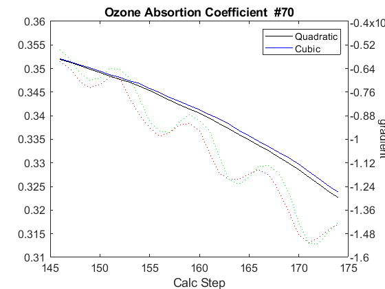

Contents
Brewer Evaluation
clear all;
file_setup='arenos2019_setup';
eval(file_setup);
Cal.n_inst=find(Cal.brw==070);
Cal.file_latex=fullfile('.','latex',Cal.brw_str{Cal.n_inst});
Cal.dir_figs=fullfile('latex',filesep(),Cal.brw_str{Cal.n_inst},...
filesep(),[Cal.brw_str{Cal.n_inst},'_figures'],filesep());
mkdir(Cal.dir_figs);
try
save(Cal.file_save,'-Append','Cal');
catch exception
fprintf('Error: %s\n Initializing data for Brewer %s\n',exception.message,Cal.brw_name{Cal.n_inst});
save(Cal.file_save);
end
ans =
logical
1
ans =
1×1 cell array
{'IZO#185'}
ans =
20×9 cell array
Columns 1 through 5
{'TSK#005'} {[ 5]} {[2]} {[0]} {'005'}
{'IOS#017'} {[ 17]} {[2]} {[0]} {'017'}
{'SCO#033'} {[ 33]} {[2]} {[0]} {'033'}
{'MAD#070'} {[ 70]} {[4]} {[0]} {'070'}
{'UK_#075'} {[ 75]} {[4]} {[0]} {'075'}
{'MUR#117'} {[117]} {[4]} {[0]} {'117'}
{'UK_#126'} {[126]} {[4]} {[0]} {'126'}
{'ARE#150'} {[150]} {[3]} {[0]} {'150'}
{'COR#151'} {[151]} {[4]} {[0]} {'151'}
{'K&Z#158'} {[158]} {[3]} {[0]} {'158'}
{'WRC#163'} {[163]} {[3]} {[0]} {'163'}
{'ZAR#166'} {[166]} {[4]} {[0]} {'166'}
{'UK_#172'} {[172]} {[3]} {[0]} {'172'}
{'JAP#174'} {[174]} {[3]} {[0]} {'174'}
{'IZO#185'} {[185]} {[3]} {[0]} {'185'}
{'MAD#186'} {[186]} {[3]} {[0]} {'186'}
{'CAN#190'} {[190]} {[3]} {[0]} {'190'}
{'TAM#201'} {[201]} {[3]} {[0]} {'201'}
{'DNK#202'} {[202]} {[3]} {[0]} {'202'}
{'DNK#228'} {[228]} {[3]} {[0]} {'228'}
Columns 6 through 9
{'..\005\ICF15117…'} {'..\005\ICF15117…'} {'1838'} {'1838'}
{'..\017\ICF14919…'} {'..\017\ICF14919…'} {'1680'} {'1680'}
{'..\033\ICF15617…'} {'..\033\IOS15617…'} {'2325'} {'2325'}
{'..\070\ICF15617…'} {'..\070\IOS15617…'} {'1685'} {'1685'}
{'..\075\ICF15017…'} {'..\075\ICF15017…'} {'1714'} {'1714'}
{'..\117\ICF15517…'} {'..\117\IOS15517…'} {'1620'} {'1620'}
{'..\126\icf15517…'} {'..\126\ICF17419…'} {'1710'} {'1710'}
{'..\150\ICF15617…'} {'..\150\ICF15617…'} {'0322'} {'0322'}
{'..\151\ICF15317…'} {'..\151\IOS15317…'} {'1880'} {'1880'}
{'..\158\ICF21218…'} {'..\158\ICF21218…'} {'0558'} {'0558'}
{'..\163\ICF23318…'} {'..\163\ICF23318…'} {'0274'} {'0274'}
{'..\166\ICF15217…'} {'..\166\ICF17419…'} {'1955'} {'1955'}
{'..\172\ICF15117…'} {'..\172\ICF15117…'} {'0444'} {'0444'}
{'..\174\ICF20718…'} {'..\174\ICF20718…'} {'0605'} {'0605'}
{'..\185\config18…'} {'..\185\ICF09819…'} {'0365'} {'0367'}
{'..\186\ICF15317…'} {'..\186\IOS15317…'} {'0315'} {'0315'}
{'..\190\ICF11419…'} {'..\190\ICF11419…'} {'0410'} {'0410'}
{'..\201\ICF14315…'} {'..\201\ICF14315…'} {'0320'} {'0320'}
{'..\202\ICF15017…'} {'..\202\ICF15017…'} {'0270'} {'0270'}
{'..\228\ICF15017…'} {'..\228\ICF17319…'} {'0242'} {'0242'}
Warning: Directory already exists.
configuration files
close all
[config_def,TCdef,DTdef,ETCdef,A1def,ATdef]=read_icf(Cal.brw_config_files{Cal.n_inst,2});
[config_orig,TCorig,DTorig,ETCorig,A1orig,ATorig]=read_icf(Cal.brw_config_files{Cal.n_inst,1});
Station.OSC=680;
Station.name='';
Station.lat=67;
Station.long=50;
Station.meanozo=350;
cal_step={}; sc_avg={}; sc_raw={}; Args={};
Sun_scan: Before Campaign
close all
[cal_step{1},sc_avg{1},sc_raw{1},Args{1}]=sc_report(Cal.brw_str{Cal.n_inst},Cal.brw_config_files{Cal.n_inst,1},...
'date_range',datenum(Cal.Date.cal_year,1,[1 159]),...
'CSN_orig',config_orig(14),'OSC',Station.OSC,...
'control_flag',1,'residual_limit',35,...
'hg_time',15,'one_flag',0);
070
OK->B05919.070
OK->B13019.070
OK->B13119.070
OK->B13219.070
OK->B13319.070
OK->B13419.070
OK->B13519.070
OK->B13619.070
OK->B13719.070
OK->B13819.070
OK->B13919.070
OK->B14019.070
OK->B14119.070
OK->B14219.070
Sun_scan: Campaign
[cal_step{2},sc_avg{2},sc_raw{2},Args{2}]=sc_report(Cal.brw_str{Cal.n_inst},Cal.brw_config_files{Cal.n_inst,2},...
'date_range',datenum(Cal.Date.cal_year,1,Cal.calibration_days{Cal.n_inst,1}([1 end])),...
'CSN_orig',config_def(14),'OSC',Station.OSC,...
'control_flag',1,'residual_limit',35,...
'hg_time',15,'one_flag',1);
070
OK->B16819.070
OK->B17019.070
OK->B17119.070
ix=sort(findobj('tag','SC_INDIVIDUAL')); figure(ix); set(get(gca,'title'),'FontSize',8);
printfiles_report(ix',Cal.dir_figs,'aux_pattern',ix,'FontSize',.9,'Width',8.5,'Height',7);
ix=sort(findobj('tag','Final_SC_Calculation'));
if length(ix)>1
Width=8; Height=6;
for i=1:length(ix), figure(ix(i)); set(get(gca,'title'),'FontSize',8); end
else
Width=13; Height=8;
end
printfiles_report(ix',Cal.dir_figs,'aux_pattern',ix,'Width',Width,'Height',Height);
close all
naux =
1
naux =
1
figura =
'070_figures_Final_SC_Calculation_1'
naux =
2
Definicion de variables: SC
if length(cal_step)>1
d_p=[length(cal_step)-1 length(cal_step)]; tags={'','new'};
else
d_p=1; tags={'new'};
end
idx=1; cal_step_error={};
for t=d_p
cal_step_error{t}=round(mean([abs(cal_step{t}(2)-cal_step{t}(3)),abs(cal_step{t}(2)-cal_step{t}(4))]));
latexcmd(fullfile(Cal.file_latex,['cal_wavelengthSC',tags{idx},'_',Cal.brw_str{Cal.n_inst}]),...
['\numSC',tags{idx}],size(sc_avg{t},1),...
['\CALCSTEP',tags{idx}],round(cal_step{t}(1)),...
['\calsteperror',tags{idx}],cal_step_error{t});
idx=idx+1;
end
load(Cal.file_save,'sunscan')
load(Cal.file_save,'sunscan');sunscan{Cal.n_inst}.cal_step=cal_step;
sunscan{Cal.n_inst}.cal_step_error=cal_step_error;
sunscan{Cal.n_inst}.sc_avg=sc_avg; sunscan{Cal.n_inst}.sc_raw=sc_raw;
sunscan{Cal.n_inst}.info=Args;
save(Cal.file_save,'-APPEND','sunscan');
dsp calibration
res={}; detail={}; DSP_QUAD={}; QUAD_SUM={}; QUAD_DETAIL={};
CUBIC_SUM={}; CUBIC_DETAIL={}; salida={}; CSN_icf={};
l=dir(fullfile('DSP',[Cal.brw_str{Cal.n_inst},'*']));
ldsp=cellstr(cat(1,l.name));
ldsp=ldsp(end-3:end)
for jj=1:length(ldsp)
if jj==length(ldsp),confign=2; else confign=1; end
try
[res{jj},detail{jj},DSP_QUAD{jj},QUAD_SUM{jj},QUAD_DETAIL{jj},...
CUBIC_SUM{jj},CUBIC_DETAIL{jj},salida{jj},CSN_icf{jj},...
]=dspreport(Cal,'dsp_dir',fullfile('DSP',ldsp{jj}),'config_n',1);
catch
warning(sprintf('Error en %s. DSP: %s',Cal.brw_name{Cal.n_inst},ldsp{jj}));
res{jj}=NaN*ones(15,9,2); detail{jj}=NaN*ones(7,6,15,2); QUAD_DETAIL{jj}=NaN;
end
datefile =
735399
now:W1016413.070
now:W3016413.070
now:W7016413.070
now:W8016413.070
now:W1116413.070
now:W3116413.070
now:W7116413.070
now:W8116413.070
now:W9116413.070
now:W1216413.070
now:W3216413.070
now:W7216413.070
now:W8216413.070
now:W9216413.070
now:W3316413.070
now:W7316413.070
now:W8316413.070
now:W9316413.070
now:W3416413.070
now:W7416413.070
now:W8416413.070
now:W9416413.070
now:W3516413.070
now:W7516413.070
now:W8516413.070
now:W9516413.070
lines_dsp_16413__070
saving alldsp to DSP/070_13_165/alldsp_16413_070.070
eliminamos la linea slit 5 3133.167000 0.147243
eliminamos la linea slit 3 2967.280000 -0.137792
eliminamos la linea slit 2 2967.280000 -0.122819
saving normaldsp to DSP/070_13_165/dspnorm_16413_070.070 as brewer compatible file
Use polyval(pwl(2,:),wl) for calculating normal wavelengths
Saving ozonecoeffs to DSP/070_13_165/opos16413_070.070
157 WL(A) 3022.46 3062.64 3100.18 3134.75 3167.89 3199.86
Res(A) 7.51 11.04 10.81 11.14 10.98 10.75
O3abs(1/cm) 3.0764 1.7879 1.0062 0.6774 0.3749 0.2948 O3: 0.3438
Daumt O3abs(1/cm) 3.0826 1.7822 0.9980 0.6711 0.3681 0.2953 O3: 0.3546
So2abs(1/cm) 8.4422 5.5269 2.3725 1.9423 1.0529 0.6159
Bremen O3abs(1/cm) 3.0780 1.7855 1.0036 0.6806 0.3733 0.2964 O3: 0.3459
Nicolet 1e4*Rayabs(1/cm) 5119.5 4834.8 4586.8 4372.6 4179.2 4002.8 R: 11.0437
Bates(fix) 1e4*Rayabs(1/cm) 0.0 4870.0 4620.0 4410.0 4220.0 4040.0 R: -1.0000
Bodhaine 1e4*Rayabs(1/cm) 5115.6 4832.8 4586.3 4373.3 4180.8 4005.1 R: 10.6657
I0(mW m^-2nm^-1) 14147.26 9411.74 7310.11 4909.72 4023.98 3206.34 ETC: 1453
Ozone offset due to Rayleigh (RayCOeff/O3Coeff): -3.2 DU
Ozone offset due to Rayleigh (Bodhaine): -3.4 DU
Ratio Ozone for So2(A3)= 1.1563, So2/O3(A2)= 2.6598
O3 factor from Bass & Paur to Daumont = 0.9695
O3 factor from Bass & Paur to Bremen = 0.9937
158 WL(A) 3022.53 3062.70 3100.24 3134.82 3167.95 3199.92
Res(A) 7.51 11.04 10.81 11.14 10.98 10.75
O3abs(1/cm) 3.0732 1.7866 1.0060 0.6771 0.3750 0.2943 O3: 0.3428
Daumt O3abs(1/cm) 3.0794 1.7809 0.9977 0.6710 0.3681 0.2949 O3: 0.3537
So2abs(1/cm) 8.4283 5.5504 2.3792 1.9317 1.0540 0.6138
Bremen O3abs(1/cm) 3.0749 1.7842 1.0033 0.6805 0.3733 0.2961 O3: 0.3450
Nicolet 1e4*Rayabs(1/cm) 5119.0 4834.3 4586.4 4372.2 4178.8 4002.5 R: 11.0414
Bates(fix) 1e4*Rayabs(1/cm) 0.0 4870.0 4620.0 4410.0 4220.0 4040.0 R: -1.0000
Bodhaine 1e4*Rayabs(1/cm) 5115.1 4832.3 4585.9 4372.9 4180.4 4004.7 R: 10.6637
I0(mW m^-2nm^-1) 14104.72 9405.79 7286.75 4906.10 4014.77 3197.24 ETC: 1437
Ozone offset due to Rayleigh (RayCOeff/O3Coeff): -3.2 DU
Ozone offset due to Rayleigh (Bodhaine): -3.4 DU
Ratio Ozone for So2(A3)= 1.1535, So2/O3(A2)= 2.6770
O3 factor from Bass & Paur to Daumont = 0.9691
O3 factor from Bass & Paur to Bremen = 0.9935
159 WL(A) 3022.59 3062.77 3100.31 3134.88 3168.02 3199.99
Res(A) 7.51 11.04 10.81 11.14 10.98 10.75
O3abs(1/cm) 3.0699 1.7852 1.0057 0.6769 0.3750 0.2939 O3: 0.3418
Daumt O3abs(1/cm) 3.0762 1.7797 0.9973 0.6709 0.3682 0.2946 O3: 0.3528
So2abs(1/cm) 8.4144 5.5740 2.3862 1.9206 1.0551 0.6118
Bremen O3abs(1/cm) 3.0719 1.7828 1.0029 0.6803 0.3734 0.2957 O3: 0.3441
Nicolet 1e4*Rayabs(1/cm) 5118.5 4833.9 4585.9 4371.8 4178.4 4002.1 R: 11.0390
Bates(fix) 1e4*Rayabs(1/cm) 0.0 4870.0 4620.0 4410.0 4220.0 4040.0 R: -1.0000
Bodhaine 1e4*Rayabs(1/cm) 5114.6 4831.9 4585.5 4372.5 4180.0 4004.4 R: 10.6573
I0(mW m^-2nm^-1) 14062.59 9399.85 7263.51 4902.48 4005.58 3188.16 ETC: 1420
Ozone offset due to Rayleigh (RayCOeff/O3Coeff): -3.2 DU
Ozone offset due to Rayleigh (Bodhaine): -3.4 DU
Ratio Ozone for So2(A3)= 1.1505, So2/O3(A2)= 2.6945
O3 factor from Bass & Paur to Daumont = 0.9688
O3 factor from Bass & Paur to Bremen = 0.9933
160 WL(A) 3022.66 3062.84 3100.38 3134.95 3168.08 3200.05
Res(A) 7.51 11.04 10.81 11.14 10.98 10.75
O3abs(1/cm) 3.0666 1.7838 1.0054 0.6766 0.3751 0.2934 O3: 0.3408
Daumt O3abs(1/cm) 3.0730 1.7784 0.9970 0.6707 0.3682 0.2942 O3: 0.3518
So2abs(1/cm) 8.3991 5.5969 2.3933 1.9098 1.0563 0.6097
Bremen O3abs(1/cm) 3.0688 1.7814 1.0026 0.6801 0.3734 0.2953 O3: 0.3431
Nicolet 1e4*Rayabs(1/cm) 5118.0 4833.4 4585.5 4371.4 4178.1 4001.8 R: 11.0367
Bates(fix) 1e4*Rayabs(1/cm) 0.0 4870.0 4620.0 4410.0 4220.0 4040.0 R: -1.0000
Bodhaine 1e4*Rayabs(1/cm) 5114.1 4831.4 4585.0 4372.1 4179.7 4004.1 R: 10.6593
I0(mW m^-2nm^-1) 14020.87 9393.92 7240.40 4898.86 3996.41 3179.09 ETC: 1403
Ozone offset due to Rayleigh (RayCOeff/O3Coeff): -3.2 DU
Ozone offset due to Rayleigh (Bodhaine): -3.4 DU
Ratio Ozone for So2(A3)= 1.1474, So2/O3(A2)= 2.7116
O3 factor from Bass & Paur to Daumont = 0.9685
O3 factor from Bass & Paur to Bremen = 0.9932
161 WL(A) 3022.73 3062.91 3100.44 3135.02 3168.15 3200.12
Res(A) 7.51 11.04 10.81 11.14 10.98 10.75
O3abs(1/cm) 3.0633 1.7824 1.0051 0.6762 0.3752 0.2930 O3: 0.3398
Daumt O3abs(1/cm) 3.0698 1.7771 0.9967 0.6706 0.3682 0.2939 O3: 0.3508
So2abs(1/cm) 8.3789 5.6180 2.4003 1.8990 1.0574 0.6075
Bremen O3abs(1/cm) 3.0656 1.7801 1.0023 0.6799 0.3735 0.2949 O3: 0.3421
Nicolet 1e4*Rayabs(1/cm) 5117.5 4832.9 4585.1 4371.0 4177.7 4001.4 R: 11.0343
Bates(fix) 1e4*Rayabs(1/cm) 0.0 4870.0 4620.0 4410.0 4220.0 4040.0 R: -1.0000
Bodhaine 1e4*Rayabs(1/cm) 5113.6 4830.9 4584.6 4371.7 4179.3 4003.7 R: 10.6562
I0(mW m^-2nm^-1) 13979.54 9388.00 7222.34 4895.25 3987.26 3170.05 ETC: 1392
Ozone offset due to Rayleigh (RayCOeff/O3Coeff): -3.2 DU
Ozone offset due to Rayleigh (Bodhaine): -3.4 DU
Ratio Ozone for So2(A3)= 1.1444, So2/O3(A2)= 2.7273
O3 factor from Bass & Paur to Daumont = 0.9685
O3 factor from Bass & Paur to Bremen = 0.9933
162 WL(A) 3022.80 3062.98 3100.51 3135.08 3168.21 3200.18
Res(A) 7.51 11.04 10.81 11.14 10.98 10.75
O3abs(1/cm) 3.0599 1.7810 1.0049 0.6759 0.3752 0.2925 O3: 0.3387
Daumt O3abs(1/cm) 3.0665 1.7758 0.9964 0.6704 0.3683 0.2935 O3: 0.3498
So2abs(1/cm) 8.3584 5.6384 2.4076 1.8882 1.0585 0.6053
Bremen O3abs(1/cm) 3.0625 1.7787 1.0020 0.6797 0.3736 0.2945 O3: 0.3410
Nicolet 1e4*Rayabs(1/cm) 5117.0 4832.5 4584.7 4370.6 4177.3 4001.1 R: 11.0320
Bates(fix) 1e4*Rayabs(1/cm) 0.0 4870.0 4620.0 4410.0 4220.0 4040.0 R: -1.0000
Bodhaine 1e4*Rayabs(1/cm) 5113.0 4830.5 4584.2 4371.3 4178.9 4003.4 R: 10.6498
I0(mW m^-2nm^-1) 13938.61 9382.08 7208.36 4891.63 3978.13 3161.02 ETC: 1384
Ozone offset due to Rayleigh (RayCOeff/O3Coeff): -3.3 DU
Ozone offset due to Rayleigh (Bodhaine): -3.4 DU
Ratio Ozone for So2(A3)= 1.1411, So2/O3(A2)= 2.7430
O3 factor from Bass & Paur to Daumont = 0.9683
O3 factor from Bass & Paur to Bremen = 0.9932
163 WL(A) 3022.87 3063.04 3100.58 3135.15 3168.28 3200.25
Res(A) 7.51 11.04 10.81 11.14 10.98 10.75
O3abs(1/cm) 3.0564 1.7794 1.0047 0.6755 0.3753 0.2920 O3: 0.3375
Daumt O3abs(1/cm) 3.0632 1.7744 0.9961 0.6702 0.3684 0.2930 O3: 0.3488
So2abs(1/cm) 8.3379 5.6589 2.4153 1.8773 1.0596 0.6031
Bremen O3abs(1/cm) 3.0593 1.7772 1.0017 0.6794 0.3736 0.2941 O3: 0.3400
Nicolet 1e4*Rayabs(1/cm) 5116.5 4832.0 4584.2 4370.2 4177.0 4000.7 R: 11.0296
Bates(fix) 1e4*Rayabs(1/cm) 0.0 4870.0 4620.0 4410.0 4220.0 4040.0 R: -1.0000
Bodhaine 1e4*Rayabs(1/cm) 5112.5 4830.0 4583.8 4370.9 4178.5 4003.0 R: 10.6529
I0(mW m^-2nm^-1) 13898.05 9376.17 7194.75 4888.03 3969.01 3152.02 ETC: 1377
Ozone offset due to Rayleigh (RayCOeff/O3Coeff): -3.3 DU
Ozone offset due to Rayleigh (Bodhaine): -3.5 DU
Ratio Ozone for So2(A3)= 1.1374, So2/O3(A2)= 2.7597
O3 factor from Bass & Paur to Daumont = 0.9678
O3 factor from Bass & Paur to Bremen = 0.9929
164 WL(A) 3022.94 3063.11 3100.64 3135.22 3168.34 3200.31
Res(A) 7.51 11.04 10.81 11.14 10.98 10.75
O3abs(1/cm) 3.0530 1.7779 1.0044 0.6751 0.3754 0.2914 O3: 0.3363
Daumt O3abs(1/cm) 3.0599 1.7731 0.9958 0.6699 0.3685 0.2926 O3: 0.3477
So2abs(1/cm) 8.3173 5.6794 2.4231 1.8662 1.0606 0.6009
Bremen O3abs(1/cm) 3.0561 1.7758 1.0014 0.6791 0.3737 0.2937 O3: 0.3388
Nicolet 1e4*Rayabs(1/cm) 5116.0 4831.5 4583.8 4369.8 4176.6 4000.4 R: 11.0273
Bates(fix) 1e4*Rayabs(1/cm) 0.0 4870.0 4620.0 4410.0 4220.0 4040.0 R: -1.0000
Bodhaine 1e4*Rayabs(1/cm) 5112.0 4829.6 4583.3 4370.5 4178.2 4002.7 R: 10.6488
I0(mW m^-2nm^-1) 13857.87 9370.28 7181.50 4884.42 3959.92 3143.03 ETC: 1371
Ozone offset due to Rayleigh (RayCOeff/O3Coeff): -3.3 DU
Ozone offset due to Rayleigh (Bodhaine): -3.5 DU
Ratio Ozone for So2(A3)= 1.1338, So2/O3(A2)= 2.7764
O3 factor from Bass & Paur to Daumont = 0.9674
O3 factor from Bass & Paur to Bremen = 0.9926
165 WL(A) 3023.01 3063.18 3100.71 3135.28 3168.41 3200.38
Res(A) 7.51 11.04 10.81 11.14 10.98 10.75
O3abs(1/cm) 3.0496 1.7764 1.0041 0.6747 0.3755 0.2908 O3: 0.3351
Daumt O3abs(1/cm) 3.0566 1.7717 0.9955 0.6697 0.3685 0.2922 O3: 0.3465
So2abs(1/cm) 8.2920 5.6981 2.4309 1.8554 1.0617 0.5986
Bremen O3abs(1/cm) 3.0528 1.7743 1.0011 0.6788 0.3738 0.2932 O3: 0.3377
Nicolet 1e4*Rayabs(1/cm) 5115.5 4831.1 4583.4 4369.4 4176.2 4000.0 R: 11.0249
Bates(fix) 1e4*Rayabs(1/cm) 0.0 4870.0 4620.0 4410.0 4220.0 4040.0 R: -1.0000
Bodhaine 1e4*Rayabs(1/cm) 5111.5 4829.1 4582.9 4370.1 4177.8 4002.3 R: 10.6425
I0(mW m^-2nm^-1) 13818.06 9364.38 7168.17 4880.82 3950.84 3134.05 ETC: 1364
Ozone offset due to Rayleigh (RayCOeff/O3Coeff): -3.3 DU
Ozone offset due to Rayleigh (Bodhaine): -3.5 DU
Ratio Ozone for So2(A3)= 1.1301, So2/O3(A2)= 2.7914
O3 factor from Bass & Paur to Daumont = 0.9670
O3 factor from Bass & Paur to Bremen = 0.9923
166 WL(A) 3023.08 3063.25 3100.78 3135.35 3168.47 3200.44
Res(A) 7.51 11.04 10.81 11.14 10.98 10.75
O3abs(1/cm) 3.0462 1.7749 1.0038 0.6743 0.3755 0.2903 O3: 0.3339
Daumt O3abs(1/cm) 3.0532 1.7703 0.9951 0.6694 0.3686 0.2917 O3: 0.3454
So2abs(1/cm) 8.2653 5.7153 2.4387 1.8445 1.0627 0.5964
Bremen O3abs(1/cm) 3.0496 1.7728 1.0007 0.6785 0.3739 0.2927 O3: 0.3365
Nicolet 1e4*Rayabs(1/cm) 5115.0 4830.6 4583.0 4369.0 4175.9 3999.7 R: 11.0226
Bates(fix) 1e4*Rayabs(1/cm) 0.0 4870.0 4620.0 4410.0 4220.0 4040.0 R: -1.0000
Bodhaine 1e4*Rayabs(1/cm) 5111.0 4828.6 4582.5 4369.7 4177.4 4002.0 R: 10.6464
I0(mW m^-2nm^-1) 13778.61 9358.50 7152.41 4877.22 3941.78 3131.03 ETC: 1365
Ozone offset due to Rayleigh (RayCOeff/O3Coeff): -3.3 DU
Ozone offset due to Rayleigh (Bodhaine): -3.5 DU
Ratio Ozone for So2(A3)= 1.1266, So2/O3(A2)= 2.8053
O3 factor from Bass & Paur to Daumont = 0.9669
O3 factor from Bass & Paur to Bremen = 0.9923
167 WL(A) 3023.14 3063.32 3100.85 3135.41 3168.54 3200.50
Res(A) 7.51 11.04 10.81 11.14 10.98 10.75
O3abs(1/cm) 3.0428 1.7734 1.0035 0.6739 0.3757 0.2897 O3: 0.3327
Daumt O3abs(1/cm) 3.0498 1.7689 0.9948 0.6691 0.3687 0.2913 O3: 0.3442
So2abs(1/cm) 8.2387 5.7325 2.4470 1.8337 1.0637 0.5942
Bremen O3abs(1/cm) 3.0463 1.7713 1.0004 0.6782 0.3740 0.2922 O3: 0.3353
Nicolet 1e4*Rayabs(1/cm) 5114.5 4830.1 4582.5 4368.6 4175.5 3999.3 R: 11.0202
Bates(fix) 1e4*Rayabs(1/cm) 0.0 4870.0 4620.0 4410.0 4220.0 4040.0 R: -1.0000
Bodhaine 1e4*Rayabs(1/cm) 5110.5 4828.2 4582.1 4369.3 4177.1 4001.6 R: 10.6413
I0(mW m^-2nm^-1) 13739.52 9352.63 7136.70 4873.62 3932.74 3128.08 ETC: 1366
Ozone offset due to Rayleigh (RayCOeff/O3Coeff): -3.3 DU
Ozone offset due to Rayleigh (Bodhaine): -3.5 DU
Ratio Ozone for So2(A3)= 1.1228, So2/O3(A2)= 2.8199
O3 factor from Bass & Paur to Daumont = 0.9665
O3 factor from Bass & Paur to Bremen = 0.9921
saving powfiu7 to DSP/070_13_165/dsp_16413_070.070
freecoef =
4
freecoef =
9
freecoef =
9
freecoef =
9
freecoef =
9
freecoef =
9
freecoef =
9
freecoef =
9
freecoef =
9
freecoef =
9
saving data to file:DSP/070_13_165/dsp_16413_070.070
Too large slitpos deviation: Recalc with slit #1 shifted by 0.142
freecoef =
4
freecoef =
9
freecoef =
9
freecoef =
9
freecoef =
9
freecoef =
9
freecoef =
9
freecoef =
9
freecoef =
9
freecoef =
9
saving data to file:DSP/070_13_165/dsp_16413_070.070
Residuals using powfiu7 [RMS]:
Columns 1 through 6
0.16573 0.14059 0.12286 0.11688 0.11483 0.11402
Columns 7 through 10
0.11362 0.11337 0.11318 0.11303
Use brstps2 to calculate steps and wavelengths
Saving ozonecoeffs to DSP/070_13_165/opos_pow7_16413_070.070
157 WL(A) 3022.55 3062.69 3100.22 3134.78 3167.69 3199.75
Res(A) 7.50 11.03 10.79 11.13 10.98 10.76
O3abs(1/cm) 3.0718 1.7868 1.0061 0.6773 0.3749 0.2955 O3: 0.3450
Daumt O3abs(1/cm) 3.0781 1.7812 0.9978 0.6711 0.3681 0.2958 O3: 0.3552
So2abs(1/cm) 8.4242 5.5475 2.3763 1.9371 1.0494 0.6191
Bremen O3abs(1/cm) 3.0737 1.7844 1.0034 0.6806 0.3733 0.2969 O3: 0.3467
Nicolet 1e4*Rayabs(1/cm) 5118.8 4834.4 4586.5 4372.4 4180.3 4003.4 R: 9.4293
Bates(fix) 1e4*Rayabs(1/cm) 0.0 4870.0 4620.0 4410.0 4220.0 4040.0 R: -1.0000
Bodhaine 1e4*Rayabs(1/cm) 5114.8 4832.4 4586.0 4373.1 4181.9 4005.7 R: 9.0603
I0(mW m^-2nm^-1) 14087.15 9406.72 7295.96 4907.82 4051.43 3221.66 ETC: 1406
Ozone offset due to Rayleigh (RayCOeff/O3Coeff): -2.7 DU
Ozone offset due to Rayleigh (Bodhaine): -2.9 DU
Ratio Ozone for So2(A3)= 1.1579, So2/O3(A2)= 2.6957
O3 factor from Bass & Paur to Daumont = 0.9712
O3 factor from Bass & Paur to Bremen = 0.9951
158 WL(A) 3022.62 3062.76 3100.29 3134.85 3167.76 3199.82
Res(A) 7.50 11.03 10.79 11.13 10.98 10.76
O3abs(1/cm) 3.0686 1.7854 1.0058 0.6770 0.3749 0.2950 O3: 0.3440
Daumt O3abs(1/cm) 3.0749 1.7799 0.9975 0.6710 0.3681 0.2955 O3: 0.3545
So2abs(1/cm) 8.4102 5.5711 2.3833 1.9263 1.0506 0.6172
Bremen O3abs(1/cm) 3.0706 1.7831 1.0031 0.6804 0.3733 0.2966 O3: 0.3459
Nicolet 1e4*Rayabs(1/cm) 5118.3 4833.9 4586.1 4372.0 4179.9 4003.0 R: 9.4271
Bates(fix) 1e4*Rayabs(1/cm) 0.0 4870.0 4620.0 4410.0 4220.0 4040.0 R: -1.0000
Bodhaine 1e4*Rayabs(1/cm) 5114.3 4831.9 4585.6 4372.7 4181.5 4005.3 R: 9.0574
I0(mW m^-2nm^-1) 14045.03 9400.78 7272.59 4904.19 4042.16 3212.54 ETC: 1389
Ozone offset due to Rayleigh (RayCOeff/O3Coeff): -2.7 DU
Ozone offset due to Rayleigh (Bodhaine): -2.9 DU
Ratio Ozone for So2(A3)= 1.1550, So2/O3(A2)= 2.7131
O3 factor from Bass & Paur to Daumont = 0.9706
O3 factor from Bass & Paur to Bremen = 0.9946
159 WL(A) 3022.69 3062.83 3100.35 3134.92 3167.82 3199.88
Res(A) 7.50 11.03 10.79 11.13 10.98 10.76
O3abs(1/cm) 3.0653 1.7840 1.0055 0.6768 0.3749 0.2946 O3: 0.3430
Daumt O3abs(1/cm) 3.0717 1.7786 0.9971 0.6708 0.3681 0.2951 O3: 0.3537
So2abs(1/cm) 8.3927 5.5942 2.3904 1.9154 1.0517 0.6152
Bremen O3abs(1/cm) 3.0675 1.7817 1.0027 0.6802 0.3733 0.2963 O3: 0.3451
Nicolet 1e4*Rayabs(1/cm) 5117.8 4833.5 4585.7 4371.6 4179.5 4002.7 R: 9.4249
Bates(fix) 1e4*Rayabs(1/cm) 0.0 4870.0 4620.0 4410.0 4220.0 4040.0 R: -1.0000
Bodhaine 1e4*Rayabs(1/cm) 5113.8 4831.5 4585.2 4372.3 4181.1 4005.0 R: 9.0504
I0(mW m^-2nm^-1) 14003.31 9394.84 7249.34 4900.56 4032.92 3203.45 ETC: 1373
Ozone offset due to Rayleigh (RayCOeff/O3Coeff): -2.7 DU
Ozone offset due to Rayleigh (Bodhaine): -2.9 DU
Ratio Ozone for So2(A3)= 1.1520, So2/O3(A2)= 2.7303
O3 factor from Bass & Paur to Daumont = 0.9700
O3 factor from Bass & Paur to Bremen = 0.9941
160 WL(A) 3022.76 3062.90 3100.42 3134.98 3167.89 3199.94
Res(A) 7.50 11.03 10.79 11.13 10.98 10.76
O3abs(1/cm) 3.0620 1.7826 1.0052 0.6765 0.3750 0.2941 O3: 0.3421
Daumt O3abs(1/cm) 3.0685 1.7773 0.9968 0.6707 0.3681 0.2948 O3: 0.3528
So2abs(1/cm) 8.3721 5.6155 2.3974 1.9046 1.0529 0.6131
Bremen O3abs(1/cm) 3.0644 1.7803 1.0024 0.6800 0.3733 0.2959 O3: 0.3442
Nicolet 1e4*Rayabs(1/cm) 5117.3 4833.0 4585.2 4371.2 4179.2 4002.3 R: 9.4227
Bates(fix) 1e4*Rayabs(1/cm) 0.0 4870.0 4620.0 4410.0 4220.0 4040.0 R: -1.0000
Bodhaine 1e4*Rayabs(1/cm) 5113.3 4831.0 4584.8 4371.9 4180.7 4004.6 R: 9.0544
I0(mW m^-2nm^-1) 13961.99 9388.91 7229.48 4896.94 4023.69 3194.38 ETC: 1359
Ozone offset due to Rayleigh (RayCOeff/O3Coeff): -2.8 DU
Ozone offset due to Rayleigh (Bodhaine): -2.9 DU
Ratio Ozone for So2(A3)= 1.1491, So2/O3(A2)= 2.7458
O3 factor from Bass & Paur to Daumont = 0.9697
O3 factor from Bass & Paur to Bremen = 0.9940
161 WL(A) 3022.83 3062.96 3100.49 3135.05 3167.95 3200.01
Res(A) 7.50 11.03 10.79 11.13 10.98 10.76
O3abs(1/cm) 3.0585 1.7812 1.0050 0.6761 0.3750 0.2937 O3: 0.3413
Daumt O3abs(1/cm) 3.0652 1.7760 0.9965 0.6705 0.3681 0.2945 O3: 0.3520
So2abs(1/cm) 8.3516 5.6360 2.4045 1.8938 1.0540 0.6111
Bremen O3abs(1/cm) 3.0612 1.7789 1.0021 0.6798 0.3733 0.2956 O3: 0.3433
Nicolet 1e4*Rayabs(1/cm) 5116.8 4832.5 4584.8 4370.8 4178.8 4002.0 R: 9.4205
Bates(fix) 1e4*Rayabs(1/cm) 0.0 4870.0 4620.0 4410.0 4220.0 4040.0 R: -1.0000
Bodhaine 1e4*Rayabs(1/cm) 5112.8 4830.6 4584.3 4371.5 4180.4 4004.3 R: 9.0502
I0(mW m^-2nm^-1) 13921.06 9382.99 7215.31 4893.31 4014.48 3185.32 ETC: 1352
Ozone offset due to Rayleigh (RayCOeff/O3Coeff): -2.8 DU
Ozone offset due to Rayleigh (Bodhaine): -2.9 DU
Ratio Ozone for So2(A3)= 1.1462, So2/O3(A2)= 2.7608
O3 factor from Bass & Paur to Daumont = 0.9697
O3 factor from Bass & Paur to Bremen = 0.9941
162 WL(A) 3022.90 3063.03 3100.55 3135.11 3168.02 3200.07
Res(A) 7.50 11.03 10.79 11.12 10.98 10.76
O3abs(1/cm) 3.0551 1.7797 1.0048 0.6758 0.3750 0.2933 O3: 0.3404
Daumt O3abs(1/cm) 3.0619 1.7747 0.9962 0.6703 0.3682 0.2941 O3: 0.3510
So2abs(1/cm) 8.3310 5.6565 2.4121 1.8830 1.0552 0.6089
Bremen O3abs(1/cm) 3.0580 1.7775 1.0018 0.6796 0.3734 0.2952 O3: 0.3424
Nicolet 1e4*Rayabs(1/cm) 5116.3 4832.1 4584.4 4370.4 4178.4 4001.6 R: 9.4184
Bates(fix) 1e4*Rayabs(1/cm) 0.0 4870.0 4620.0 4410.0 4220.0 4040.0 R: -1.0000
Bodhaine 1e4*Rayabs(1/cm) 5112.3 4830.1 4583.9 4371.1 4180.0 4003.9 R: 9.0443
I0(mW m^-2nm^-1) 13880.52 9377.07 7201.52 4889.69 4005.29 3176.28 ETC: 1345
Ozone offset due to Rayleigh (RayCOeff/O3Coeff): -2.8 DU
Ozone offset due to Rayleigh (Bodhaine): -3.0 DU
Ratio Ozone for So2(A3)= 1.1431, So2/O3(A2)= 2.7761
O3 factor from Bass & Paur to Daumont = 0.9697
O3 factor from Bass & Paur to Bremen = 0.9942
163 WL(A) 3022.97 3063.10 3100.62 3135.18 3168.08 3200.14
Res(A) 7.50 11.03 10.79 11.12 10.98 10.76
O3abs(1/cm) 3.0517 1.7782 1.0045 0.6754 0.3751 0.2928 O3: 0.3394
Daumt O3abs(1/cm) 3.0586 1.7733 0.9959 0.6701 0.3682 0.2937 O3: 0.3501
So2abs(1/cm) 8.3092 5.6771 2.4198 1.8719 1.0563 0.6068
Bremen O3abs(1/cm) 3.0548 1.7761 1.0015 0.6793 0.3734 0.2948 O3: 0.3414
Nicolet 1e4*Rayabs(1/cm) 5115.8 4831.6 4584.0 4370.0 4178.1 4001.3 R: 9.4162
Bates(fix) 1e4*Rayabs(1/cm) 0.0 4870.0 4620.0 4410.0 4220.0 4040.0 R: -1.0000
Bodhaine 1e4*Rayabs(1/cm) 5111.8 4829.6 4583.5 4370.7 4179.6 4003.6 R: 9.0485
I0(mW m^-2nm^-1) 13840.34 9371.17 7188.09 4886.08 3996.13 3167.26 ETC: 1338
Ozone offset due to Rayleigh (RayCOeff/O3Coeff): -2.8 DU
Ozone offset due to Rayleigh (Bodhaine): -3.0 DU
Ratio Ozone for So2(A3)= 1.1399, So2/O3(A2)= 2.7918
O3 factor from Bass & Paur to Daumont = 0.9695
O3 factor from Bass & Paur to Bremen = 0.9941
164 WL(A) 3023.03 3063.17 3100.69 3135.25 3168.15 3200.20
Res(A) 7.50 11.03 10.79 11.12 10.98 10.76
O3abs(1/cm) 3.0483 1.7767 1.0042 0.6750 0.3752 0.2923 O3: 0.3383
Daumt O3abs(1/cm) 3.0552 1.7720 0.9956 0.6699 0.3683 0.2933 O3: 0.3491
So2abs(1/cm) 8.2828 5.6959 2.4276 1.8610 1.0574 0.6046
Bremen O3abs(1/cm) 3.0516 1.7746 1.0012 0.6790 0.3735 0.2944 O3: 0.3404
Nicolet 1e4*Rayabs(1/cm) 5115.3 4831.2 4583.5 4369.6 4177.7 4001.0 R: 9.4140
Bates(fix) 1e4*Rayabs(1/cm) 0.0 4870.0 4620.0 4410.0 4220.0 4040.0 R: -1.0000
Bodhaine 1e4*Rayabs(1/cm) 5111.3 4829.2 4583.1 4370.3 4179.3 4003.3 R: 9.0429
I0(mW m^-2nm^-1) 13800.54 9365.27 7175.01 4882.46 3986.97 3158.26 ETC: 1331
Ozone offset due to Rayleigh (RayCOeff/O3Coeff): -2.8 DU
Ozone offset due to Rayleigh (Bodhaine): -3.0 DU
Ratio Ozone for So2(A3)= 1.1364, So2/O3(A2)= 2.8065
O3 factor from Bass & Paur to Daumont = 0.9690
O3 factor from Bass & Paur to Bremen = 0.9938
165 WL(A) 3023.10 3063.24 3100.75 3135.31 3168.22 3200.27
Res(A) 7.50 11.03 10.79 11.12 10.98 10.76
O3abs(1/cm) 3.0448 1.7752 1.0039 0.6746 0.3752 0.2917 O3: 0.3371
Daumt O3abs(1/cm) 3.0519 1.7706 0.9953 0.6696 0.3683 0.2929 O3: 0.3481
So2abs(1/cm) 8.2561 5.7134 2.4355 1.8501 1.0585 0.6024
Bremen O3abs(1/cm) 3.0483 1.7731 1.0009 0.6787 0.3736 0.2939 O3: 0.3393
Nicolet 1e4*Rayabs(1/cm) 5114.8 4830.7 4583.1 4369.2 4177.3 4000.6 R: 9.4118
Bates(fix) 1e4*Rayabs(1/cm) 0.0 4870.0 4620.0 4410.0 4220.0 4040.0 R: -1.0000
Bodhaine 1e4*Rayabs(1/cm) 5110.8 4828.7 4582.6 4369.9 4178.9 4002.9 R: 9.0382
I0(mW m^-2nm^-1) 13761.09 9359.38 7159.80 4878.85 3977.84 3149.27 ETC: 1323
Ozone offset due to Rayleigh (RayCOeff/O3Coeff): -2.8 DU
Ozone offset due to Rayleigh (Bodhaine): -3.0 DU
Ratio Ozone for So2(A3)= 1.1328, So2/O3(A2)= 2.8205
O3 factor from Bass & Paur to Daumont = 0.9684
O3 factor from Bass & Paur to Bremen = 0.9934
166 WL(A) 3023.17 3063.30 3100.82 3135.38 3168.28 3200.33
Res(A) 7.50 11.03 10.79 11.12 10.98 10.76
O3abs(1/cm) 3.0414 1.7737 1.0036 0.6741 0.3753 0.2912 O3: 0.3358
Daumt O3abs(1/cm) 3.0485 1.7692 0.9950 0.6693 0.3684 0.2925 O3: 0.3470
So2abs(1/cm) 8.2295 5.7306 2.4434 1.8392 1.0596 0.6001
Bremen O3abs(1/cm) 3.0450 1.7716 1.0006 0.6784 0.3736 0.2935 O3: 0.3383
Nicolet 1e4*Rayabs(1/cm) 5114.3 4830.2 4582.7 4368.8 4177.0 4000.3 R: 9.4097
Bates(fix) 1e4*Rayabs(1/cm) 0.0 4870.0 4620.0 4410.0 4220.0 4040.0 R: -1.0000
Bodhaine 1e4*Rayabs(1/cm) 5110.3 4828.3 4582.2 4369.5 4178.5 4002.6 R: 9.0425
I0(mW m^-2nm^-1) 13722.00 9353.50 7144.04 4875.24 3968.73 3140.31 ETC: 1314
Ozone offset due to Rayleigh (RayCOeff/O3Coeff): -2.8 DU
Ozone offset due to Rayleigh (Bodhaine): -3.0 DU
Ratio Ozone for So2(A3)= 1.1291, So2/O3(A2)= 2.8348
O3 factor from Bass & Paur to Daumont = 0.9678
O3 factor from Bass & Paur to Bremen = 0.9928
167 WL(A) 3023.24 3063.37 3100.89 3135.45 3168.35 3200.40
Res(A) 7.50 11.03 10.79 11.12 10.98 10.76
O3abs(1/cm) 3.0379 1.7721 1.0033 0.6737 0.3754 0.2906 O3: 0.3346
Daumt O3abs(1/cm) 3.0451 1.7678 0.9946 0.6690 0.3685 0.2920 O3: 0.3459
So2abs(1/cm) 8.2027 5.7478 2.4519 1.8283 1.0607 0.5979
Bremen O3abs(1/cm) 3.0417 1.7701 1.0002 0.6781 0.3737 0.2930 O3: 0.3372
Nicolet 1e4*Rayabs(1/cm) 5113.8 4829.8 4582.3 4368.4 4176.6 3999.9 R: 9.4075
Bates(fix) 1e4*Rayabs(1/cm) 0.0 4870.0 4620.0 4410.0 4220.0 4040.0 R: -1.0000
Bodhaine 1e4*Rayabs(1/cm) 5109.8 4827.8 4581.8 4369.1 4178.2 4002.2 R: 9.0357
I0(mW m^-2nm^-1) 13683.26 9347.62 7128.34 4871.64 3959.64 3132.79 ETC: 1307
Ozone offset due to Rayleigh (RayCOeff/O3Coeff): -2.8 DU
Ozone offset due to Rayleigh (Bodhaine): -3.0 DU
Ratio Ozone for So2(A3)= 1.1255, So2/O3(A2)= 2.8487
O3 factor from Bass & Paur to Daumont = 0.9674
O3 factor from Bass & Paur to Bremen = 0.9926
Warning: The EraseMode property is no longer
supported and will error in a future
release.
Warning: The EraseMode property is no longer
supported and will error in a future
release.
Warning: The EraseMode property is no longer
supported and will error in a future
release.
Warning: The EraseMode property is no longer
supported and will error in a future
release.
Warning: The EraseMode property is no longer
supported and will error in a future
release.
Warning: The EraseMode property is no longer
supported and will error in a future
release.
Warning: The EraseMode property is no longer
supported and will error in a future
release.
Warning: The EraseMode property is no longer
supported and will error in a future
release.
Warning: The EraseMode property is no longer
supported and will error in a future
release.
Warning: The EraseMode property is no longer
supported and will error in a future
release.
Warning: The EraseMode property is no longer
supported and will error in a future
release.
datefile =
736116
now:W1015215.070
now:W3015215.070
now:W7015215.070
now:W8015215.070
now:W1115215.070
now:W3115215.070
now:W7115215.070
now:W8115215.070
now:W9115215.070
now:W1215215.070
now:W3215215.070
now:W7215215.070
now:W8215215.070
now:W9215215.070
now:W3315215.070
now:W7315215.070
now:W8315215.070
now:W9315215.070
now:W3415215.070
now:W7415215.070
now:W8415215.070
now:W9415215.070
now:W3515215.070
now:W7515215.070
now:W8515215.070
now:W9515215.070
lines_dsp_15115__070
saving alldsp to DSP/070_15_152/alldsp_15115_070.070
eliminamos la linea slit 3 2967.280000 -0.200654
saving normaldsp to DSP/070_15_152/dspnorm_15115_070.070 as brewer compatible file
Use polyval(pwl(2,:),wl) for calculating normal wavelengths
Saving ozonecoeffs to DSP/070_15_152/opos15115_070.070
157 WL(A) 3022.60 3062.75 3100.27 3134.89 3167.83 3199.92
Res(A) 7.48 11.18 10.72 11.14 10.97 10.67
O3abs(1/cm) 3.0697 1.7853 1.0059 0.6769 0.3749 0.2945 O3: 0.3433
Daumt O3abs(1/cm) 3.0760 1.7798 0.9975 0.6709 0.3681 0.2951 O3: 0.3541
So2abs(1/cm) 8.4168 5.5559 2.3800 1.9196 1.0519 0.6142
Bremen O3abs(1/cm) 3.0717 1.7829 1.0031 0.6803 0.3733 0.2962 O3: 0.3455
Nicolet 1e4*Rayabs(1/cm) 5118.5 4834.0 4586.2 4371.8 4179.5 4002.5 R: 9.6223
Bates(fix) 1e4*Rayabs(1/cm) 0.0 4870.0 4620.0 4410.0 4220.0 4040.0 R: -1.0000
Bodhaine 1e4*Rayabs(1/cm) 5114.5 4832.0 4585.7 4372.4 4181.1 4004.8 R: 9.2449
I0(mW m^-2nm^-1) 14058.87 9402.17 7282.00 4902.07 4031.51 3196.57 ETC: 1396
Ozone offset due to Rayleigh (RayCOeff/O3Coeff): -2.8 DU
Ozone offset due to Rayleigh (Bodhaine): -3.0 DU
Ratio Ozone for So2(A3)= 1.1531, So2/O3(A2)= 2.6911
O3 factor from Bass & Paur to Daumont = 0.9696
O3 factor from Bass & Paur to Bremen = 0.9938
158 WL(A) 3022.67 3062.82 3100.33 3134.96 3167.90 3199.99
Res(A) 7.48 11.18 10.72 11.14 10.97 10.67
O3abs(1/cm) 3.0664 1.7839 1.0056 0.6766 0.3749 0.2941 O3: 0.3424
Daumt O3abs(1/cm) 3.0728 1.7785 0.9972 0.6707 0.3681 0.2948 O3: 0.3532
So2abs(1/cm) 8.4013 5.5788 2.3871 1.9088 1.0531 0.6121
Bremen O3abs(1/cm) 3.0686 1.7816 1.0028 0.6801 0.3733 0.2959 O3: 0.3446
Nicolet 1e4*Rayabs(1/cm) 5118.0 4833.5 4585.8 4371.4 4179.1 4002.1 R: 9.6204
Bates(fix) 1e4*Rayabs(1/cm) 0.0 4870.0 4620.0 4410.0 4220.0 4040.0 R: -1.0000
Bodhaine 1e4*Rayabs(1/cm) 5114.0 4831.5 4585.3 4372.0 4180.7 4004.4 R: 9.2493
I0(mW m^-2nm^-1) 14016.68 9396.37 7258.23 4898.45 4022.24 3187.27 ETC: 1378
Ozone offset due to Rayleigh (RayCOeff/O3Coeff): -2.8 DU
Ozone offset due to Rayleigh (Bodhaine): -3.0 DU
Ratio Ozone for So2(A3)= 1.1502, So2/O3(A2)= 2.7077
O3 factor from Bass & Paur to Daumont = 0.9692
O3 factor from Bass & Paur to Bremen = 0.9935
159 WL(A) 3022.74 3062.89 3100.40 3135.02 3167.96 3200.05
Res(A) 7.48 11.18 10.72 11.14 10.97 10.67
O3abs(1/cm) 3.0631 1.7826 1.0053 0.6762 0.3750 0.2936 O3: 0.3415
Daumt O3abs(1/cm) 3.0696 1.7772 0.9969 0.6706 0.3681 0.2944 O3: 0.3523
So2abs(1/cm) 8.3809 5.6011 2.3943 1.8980 1.0542 0.6100
Bremen O3abs(1/cm) 3.0655 1.7802 1.0025 0.6799 0.3733 0.2955 O3: 0.3437
Nicolet 1e4*Rayabs(1/cm) 5117.5 4833.1 4585.4 4371.0 4178.8 4001.8 R: 9.6185
Bates(fix) 1e4*Rayabs(1/cm) 0.0 4870.0 4620.0 4410.0 4220.0 4040.0 R: -1.0000
Bodhaine 1e4*Rayabs(1/cm) 5113.5 4831.1 4584.9 4371.6 4180.3 4004.1 R: 9.2457
I0(mW m^-2nm^-1) 13974.90 9390.58 7239.57 4894.82 4013.00 3177.98 ETC: 1366
Ozone offset due to Rayleigh (RayCOeff/O3Coeff): -2.8 DU
Ozone offset due to Rayleigh (Bodhaine): -3.0 DU
Ratio Ozone for So2(A3)= 1.1473, So2/O3(A2)= 2.7240
O3 factor from Bass & Paur to Daumont = 0.9691
O3 factor from Bass & Paur to Bremen = 0.9936
160 WL(A) 3022.81 3062.96 3100.47 3135.09 3168.03 3200.12
Res(A) 7.48 11.18 10.72 11.14 10.97 10.67
O3abs(1/cm) 3.0598 1.7811 1.0051 0.6759 0.3750 0.2932 O3: 0.3405
Daumt O3abs(1/cm) 3.0663 1.7759 0.9966 0.6704 0.3681 0.2940 O3: 0.3514
So2abs(1/cm) 8.3602 5.6212 2.4015 1.8872 1.0554 0.6079
Bremen O3abs(1/cm) 3.0623 1.7788 1.0022 0.6797 0.3734 0.2951 O3: 0.3427
Nicolet 1e4*Rayabs(1/cm) 5117.0 4832.6 4584.9 4370.6 4178.4 4001.4 R: 9.6166
Bates(fix) 1e4*Rayabs(1/cm) 0.0 4870.0 4620.0 4410.0 4220.0 4040.0 R: -1.0000
Bodhaine 1e4*Rayabs(1/cm) 5113.0 4830.6 4584.5 4371.2 4180.0 4003.7 R: 9.2396
I0(mW m^-2nm^-1) 13933.52 9384.79 7224.99 4891.21 4003.78 3168.72 ETC: 1358
Ozone offset due to Rayleigh (RayCOeff/O3Coeff): -2.8 DU
Ozone offset due to Rayleigh (Bodhaine): -3.0 DU
Ratio Ozone for So2(A3)= 1.1442, So2/O3(A2)= 2.7390
O3 factor from Bass & Paur to Daumont = 0.9690
O3 factor from Bass & Paur to Bremen = 0.9936
161 WL(A) 3022.87 3063.02 3100.53 3135.16 3168.09 3200.18
Res(A) 7.48 11.18 10.72 11.14 10.97 10.67
O3abs(1/cm) 3.0563 1.7795 1.0049 0.6755 0.3751 0.2927 O3: 0.3395
Daumt O3abs(1/cm) 3.0630 1.7745 0.9963 0.6702 0.3682 0.2937 O3: 0.3504
So2abs(1/cm) 8.3395 5.6412 2.4086 1.8762 1.0565 0.6057
Bremen O3abs(1/cm) 3.0591 1.7774 1.0019 0.6794 0.3734 0.2947 O3: 0.3417
Nicolet 1e4*Rayabs(1/cm) 5116.5 4832.1 4584.5 4370.2 4178.0 4001.1 R: 9.6148
Bates(fix) 1e4*Rayabs(1/cm) 0.0 4870.0 4620.0 4410.0 4220.0 4040.0 R: -1.0000
Bodhaine 1e4*Rayabs(1/cm) 5112.5 4830.2 4584.0 4370.9 4179.6 4003.4 R: 9.2449
I0(mW m^-2nm^-1) 13892.54 9379.02 7210.82 4887.59 3994.58 3159.47 ETC: 1350
Ozone offset due to Rayleigh (RayCOeff/O3Coeff): -2.8 DU
Ozone offset due to Rayleigh (Bodhaine): -3.0 DU
Ratio Ozone for So2(A3)= 1.1409, So2/O3(A2)= 2.7542
O3 factor from Bass & Paur to Daumont = 0.9689
O3 factor from Bass & Paur to Bremen = 0.9936
162 WL(A) 3022.94 3063.09 3100.60 3135.22 3168.16 3200.25
Res(A) 7.48 11.18 10.72 11.14 10.97 10.67
O3abs(1/cm) 3.0529 1.7779 1.0046 0.6751 0.3752 0.2922 O3: 0.3384
Daumt O3abs(1/cm) 3.0597 1.7732 0.9960 0.6699 0.3682 0.2932 O3: 0.3494
So2abs(1/cm) 8.3187 5.6611 2.4164 1.8652 1.0576 0.6034
Bremen O3abs(1/cm) 3.0559 1.7759 1.0016 0.6791 0.3735 0.2943 O3: 0.3407
Nicolet 1e4*Rayabs(1/cm) 5116.0 4831.7 4584.1 4369.8 4177.6 4000.7 R: 9.6129
Bates(fix) 1e4*Rayabs(1/cm) 0.0 4870.0 4620.0 4410.0 4220.0 4040.0 R: -1.0000
Bodhaine 1e4*Rayabs(1/cm) 5112.0 4829.7 4583.6 4370.5 4179.2 4003.0 R: 9.2393
I0(mW m^-2nm^-1) 13851.94 9373.24 7197.02 4883.98 3985.39 3150.25 ETC: 1343
Ozone offset due to Rayleigh (RayCOeff/O3Coeff): -2.8 DU
Ozone offset due to Rayleigh (Bodhaine): -3.0 DU
Ratio Ozone for So2(A3)= 1.1372, So2/O3(A2)= 2.7702
O3 factor from Bass & Paur to Daumont = 0.9684
O3 factor from Bass & Paur to Bremen = 0.9933
163 WL(A) 3023.01 3063.16 3100.67 3135.29 3168.22 3200.31
Res(A) 7.48 11.18 10.72 11.14 10.97 10.66
O3abs(1/cm) 3.0495 1.7765 1.0044 0.6747 0.3752 0.2916 O3: 0.3372
Daumt O3abs(1/cm) 3.0564 1.7718 0.9957 0.6697 0.3683 0.2928 O3: 0.3484
So2abs(1/cm) 8.2934 5.6806 2.4244 1.8543 1.0587 0.6012
Bremen O3abs(1/cm) 3.0527 1.7745 1.0013 0.6788 0.3736 0.2939 O3: 0.3396
Nicolet 1e4*Rayabs(1/cm) 5115.5 4831.2 4583.7 4369.4 4177.3 4000.4 R: 9.6110
Bates(fix) 1e4*Rayabs(1/cm) 0.0 4870.0 4620.0 4410.0 4220.0 4040.0 R: -1.0000
Bodhaine 1e4*Rayabs(1/cm) 5111.5 4829.2 4583.2 4370.1 4178.8 4002.7 R: 9.2343
I0(mW m^-2nm^-1) 13811.71 9367.48 7183.59 4880.37 3976.23 3141.04 ETC: 1335
Ozone offset due to Rayleigh (RayCOeff/O3Coeff): -2.9 DU
Ozone offset due to Rayleigh (Bodhaine): -3.0 DU
Ratio Ozone for So2(A3)= 1.1336, So2/O3(A2)= 2.7857
O3 factor from Bass & Paur to Daumont = 0.9679
O3 factor from Bass & Paur to Bremen = 0.9929
164 WL(A) 3023.08 3063.23 3100.74 3135.35 3168.29 3200.37
Res(A) 7.48 11.18 10.72 11.14 10.97 10.66
O3abs(1/cm) 3.0460 1.7750 1.0041 0.6743 0.3753 0.2910 O3: 0.3360
Daumt O3abs(1/cm) 3.0530 1.7704 0.9954 0.6694 0.3684 0.2924 O3: 0.3473
So2abs(1/cm) 8.2666 5.6984 2.4323 1.8434 1.0598 0.5990
Bremen O3abs(1/cm) 3.0494 1.7730 1.0010 0.6785 0.3736 0.2934 O3: 0.3385
Nicolet 1e4*Rayabs(1/cm) 5114.9 4830.8 4583.2 4369.0 4176.9 4000.0 R: 9.6091
Bates(fix) 1e4*Rayabs(1/cm) 0.0 4870.0 4620.0 4410.0 4220.0 4040.0 R: -1.0000
Bodhaine 1e4*Rayabs(1/cm) 5111.0 4828.8 4582.8 4369.7 4178.5 4002.3 R: 9.2405
I0(mW m^-2nm^-1) 13771.86 9361.73 7168.73 4876.76 3967.08 3135.83 ETC: 1334
Ozone offset due to Rayleigh (RayCOeff/O3Coeff): -2.9 DU
Ozone offset due to Rayleigh (Bodhaine): -3.0 DU
Ratio Ozone for So2(A3)= 1.1300, So2/O3(A2)= 2.8000
O3 factor from Bass & Paur to Daumont = 0.9674
O3 factor from Bass & Paur to Bremen = 0.9925
165 WL(A) 3023.15 3063.30 3100.80 3135.42 3168.36 3200.44
Res(A) 7.48 11.18 10.72 11.14 10.97 10.66
O3abs(1/cm) 3.0425 1.7735 1.0037 0.6738 0.3754 0.2905 O3: 0.3348
Daumt O3abs(1/cm) 3.0496 1.7690 0.9951 0.6691 0.3685 0.2919 O3: 0.3462
So2abs(1/cm) 8.2397 5.7151 2.4402 1.8325 1.0609 0.5967
Bremen O3abs(1/cm) 3.0461 1.7715 1.0007 0.6782 0.3737 0.2929 O3: 0.3374
Nicolet 1e4*Rayabs(1/cm) 5114.4 4830.3 4582.8 4368.6 4176.5 3999.7 R: 9.6072
Bates(fix) 1e4*Rayabs(1/cm) 0.0 4870.0 4620.0 4410.0 4220.0 4040.0 R: -1.0000
Bodhaine 1e4*Rayabs(1/cm) 5110.5 4828.3 4582.3 4369.3 4178.1 4002.0 R: 9.2330
I0(mW m^-2nm^-1) 13732.37 9355.98 7152.71 4873.15 3957.95 3132.74 ETC: 1334
Ozone offset due to Rayleigh (RayCOeff/O3Coeff): -2.9 DU
Ozone offset due to Rayleigh (Bodhaine): -3.1 DU
Ratio Ozone for So2(A3)= 1.1264, So2/O3(A2)= 2.8133
O3 factor from Bass & Paur to Daumont = 0.9671
O3 factor from Bass & Paur to Bremen = 0.9923
166 WL(A) 3023.22 3063.36 3100.87 3135.49 3168.42 3200.50
Res(A) 7.48 11.18 10.72 11.14 10.97 10.66
O3abs(1/cm) 3.0390 1.7720 1.0034 0.6733 0.3755 0.2899 O3: 0.3336
Daumt O3abs(1/cm) 3.0462 1.7676 0.9948 0.6688 0.3685 0.2915 O3: 0.3450
So2abs(1/cm) 8.2129 5.7319 2.4484 1.8214 1.0619 0.5944
Bremen O3abs(1/cm) 3.0428 1.7700 1.0004 0.6778 0.3738 0.2924 O3: 0.3362
Nicolet 1e4*Rayabs(1/cm) 5113.9 4829.8 4582.4 4368.2 4176.2 3999.3 R: 9.6053
Bates(fix) 1e4*Rayabs(1/cm) 0.0 4870.0 4620.0 4410.0 4220.0 4040.0 R: -1.0000
Bodhaine 1e4*Rayabs(1/cm) 5110.0 4827.9 4581.9 4368.9 4177.7 4001.6 R: 9.2291
I0(mW m^-2nm^-1) 13693.25 9350.24 7136.76 4869.55 3948.85 3129.73 ETC: 1335
Ozone offset due to Rayleigh (RayCOeff/O3Coeff): -2.9 DU
Ozone offset due to Rayleigh (Bodhaine): -3.1 DU
Ratio Ozone for So2(A3)= 1.1228, So2/O3(A2)= 2.8268
O3 factor from Bass & Paur to Daumont = 0.9669
O3 factor from Bass & Paur to Bremen = 0.9923
167 WL(A) 3023.29 3063.43 3100.94 3135.55 3168.49 3200.57
Res(A) 7.48 11.18 10.72 11.14 10.97 10.66
O3abs(1/cm) 3.0356 1.7704 1.0031 0.6728 0.3755 0.2894 O3: 0.3325
Daumt O3abs(1/cm) 3.0428 1.7662 0.9945 0.6684 0.3686 0.2910 O3: 0.3439
So2abs(1/cm) 8.1840 5.7484 2.4570 1.8105 1.0630 0.5921
Bremen O3abs(1/cm) 3.0395 1.7685 1.0001 0.6774 0.3739 0.2919 O3: 0.3350
Nicolet 1e4*Rayabs(1/cm) 5113.4 4829.4 4581.9 4367.8 4175.8 3999.0 R: 9.6034
Bates(fix) 1e4*Rayabs(1/cm) 0.0 4870.0 4620.0 4410.0 4220.0 4040.0 R: -1.0000
Bodhaine 1e4*Rayabs(1/cm) 5109.5 4827.4 4581.5 4368.5 4177.4 4001.3 R: 9.2361
I0(mW m^-2nm^-1) 13654.47 9344.50 7120.86 4865.95 3939.76 3126.80 ETC: 1336
Ozone offset due to Rayleigh (RayCOeff/O3Coeff): -2.9 DU
Ozone offset due to Rayleigh (Bodhaine): -3.1 DU
Ratio Ozone for So2(A3)= 1.1191, So2/O3(A2)= 2.8404
O3 factor from Bass & Paur to Daumont = 0.9669
O3 factor from Bass & Paur to Bremen = 0.9924
saving powfiu7 to DSP/070_15_152/dsp_15115_070.070
freecoef =
4
freecoef =
9
freecoef =
9
freecoef =
9
freecoef =
9
freecoef =
9
freecoef =
9
freecoef =
9
freecoef =
9
freecoef =
9
saving data to file:DSP/070_15_152/dsp_15115_070.070
Too large slitpos deviation: Recalc with slit #1 shifted by 0.144
freecoef =
4
freecoef =
9
freecoef =
9
freecoef =
9
freecoef =
9
freecoef =
9
freecoef =
9
freecoef =
9
freecoef =
9
freecoef =
9
saving data to file:DSP/070_15_152/dsp_15115_070.070
Residuals using powfiu7 [RMS]:
Columns 1 through 6
0.14265 0.10274 0.076903 0.066967 0.063263 0.061715
Columns 7 through 10
0.060904 0.060373 0.059972 0.059648
Use brstps2 to calculate steps and wavelengths
Saving ozonecoeffs to DSP/070_15_152/opos_pow7_15115_070.070
157 WL(A) 3022.67 3062.77 3100.31 3134.87 3167.76 3199.85
Res(A) 7.47 11.17 10.70 11.12 10.96 10.67
O3abs(1/cm) 3.0662 1.7849 1.0057 0.6770 0.3749 0.2950 O3: 0.3439
Daumt O3abs(1/cm) 3.0727 1.7794 0.9973 0.6710 0.3680 0.2955 O3: 0.3545
So2abs(1/cm) 8.4010 5.5642 2.3844 1.9224 1.0507 0.6163
Bremen O3abs(1/cm) 3.0685 1.7825 1.0029 0.6804 0.3732 0.2966 O3: 0.3459
Nicolet 1e4*Rayabs(1/cm) 5117.9 4833.9 4585.9 4371.9 4179.9 4002.8 R: 9.0483
Bates(fix) 1e4*Rayabs(1/cm) 0.0 4870.0 4620.0 4410.0 4220.0 4040.0 R: -1.0000
Bodhaine 1e4*Rayabs(1/cm) 5114.0 4831.9 4585.4 4372.5 4181.5 4005.1 R: 8.6801
I0(mW m^-2nm^-1) 14014.41 9400.31 7266.79 4902.86 4041.20 3206.45 ETC: 1376
Ozone offset due to Rayleigh (RayCOeff/O3Coeff): -2.6 DU
Ozone offset due to Rayleigh (Bodhaine): -2.8 DU
Ratio Ozone for So2(A3)= 1.1544, So2/O3(A2)= 2.7058
O3 factor from Bass & Paur to Daumont = 0.9703
O3 factor from Bass & Paur to Bremen = 0.9943
158 WL(A) 3022.74 3062.84 3100.38 3134.94 3167.83 3199.92
Res(A) 7.47 11.17 10.70 11.12 10.96 10.67
O3abs(1/cm) 3.0629 1.7835 1.0054 0.6767 0.3749 0.2945 O3: 0.3430
Daumt O3abs(1/cm) 3.0694 1.7781 0.9970 0.6708 0.3681 0.2951 O3: 0.3536
So2abs(1/cm) 8.3805 5.5870 2.3915 1.9115 1.0519 0.6143
Bremen O3abs(1/cm) 3.0653 1.7812 1.0026 0.6802 0.3732 0.2963 O3: 0.3451
Nicolet 1e4*Rayabs(1/cm) 5117.4 4833.4 4585.5 4371.5 4179.5 4002.5 R: 9.0462
Bates(fix) 1e4*Rayabs(1/cm) 0.0 4870.0 4620.0 4410.0 4220.0 4040.0 R: -1.0000
Bodhaine 1e4*Rayabs(1/cm) 5113.5 4831.4 4585.0 4372.1 4181.1 4004.8 R: 8.6720
I0(mW m^-2nm^-1) 13972.59 9394.50 7246.59 4899.23 4031.91 3197.14 ETC: 1362
Ozone offset due to Rayleigh (RayCOeff/O3Coeff): -2.6 DU
Ozone offset due to Rayleigh (Bodhaine): -2.8 DU
Ratio Ozone for So2(A3)= 1.1515, So2/O3(A2)= 2.7224
O3 factor from Bass & Paur to Daumont = 0.9699
O3 factor from Bass & Paur to Bremen = 0.9940
159 WL(A) 3022.81 3062.91 3100.45 3135.01 3167.89 3199.98
Res(A) 7.47 11.17 10.70 11.12 10.96 10.67
O3abs(1/cm) 3.0596 1.7822 1.0052 0.6764 0.3749 0.2941 O3: 0.3421
Daumt O3abs(1/cm) 3.0662 1.7768 0.9967 0.6706 0.3681 0.2948 O3: 0.3528
So2abs(1/cm) 8.3598 5.6084 2.3988 1.9007 1.0530 0.6122
Bremen O3abs(1/cm) 3.0622 1.7798 1.0023 0.6800 0.3733 0.2959 O3: 0.3442
Nicolet 1e4*Rayabs(1/cm) 5116.9 4832.9 4585.1 4371.1 4179.1 4002.1 R: 9.0441
Bates(fix) 1e4*Rayabs(1/cm) 0.0 4870.0 4620.0 4410.0 4220.0 4040.0 R: -1.0000
Bodhaine 1e4*Rayabs(1/cm) 5113.0 4830.9 4584.6 4371.7 4180.7 4004.4 R: 8.6758
I0(mW m^-2nm^-1) 13931.17 9388.71 7231.82 4895.60 4022.64 3187.84 ETC: 1354
Ozone offset due to Rayleigh (RayCOeff/O3Coeff): -2.6 DU
Ozone offset due to Rayleigh (Bodhaine): -2.8 DU
Ratio Ozone for So2(A3)= 1.1486, So2/O3(A2)= 2.7379
O3 factor from Bass & Paur to Daumont = 0.9697
O3 factor from Bass & Paur to Bremen = 0.9940
160 WL(A) 3022.88 3062.98 3100.51 3135.07 3167.96 3200.05
Res(A) 7.47 11.17 10.70 11.12 10.96 10.67
O3abs(1/cm) 3.0562 1.7806 1.0050 0.6760 0.3750 0.2936 O3: 0.3412
Daumt O3abs(1/cm) 3.0629 1.7755 0.9964 0.6705 0.3681 0.2944 O3: 0.3519
So2abs(1/cm) 8.3391 5.6285 2.4059 1.8899 1.0542 0.6101
Bremen O3abs(1/cm) 3.0590 1.7784 1.0020 0.6798 0.3733 0.2955 O3: 0.3433
Nicolet 1e4*Rayabs(1/cm) 5116.4 4832.5 4584.7 4370.7 4178.8 4001.8 R: 9.0419
Bates(fix) 1e4*Rayabs(1/cm) 0.0 4870.0 4620.0 4410.0 4220.0 4040.0 R: -1.0000
Bodhaine 1e4*Rayabs(1/cm) 5112.5 4830.5 4584.2 4371.3 4180.3 4004.1 R: 8.6729
I0(mW m^-2nm^-1) 13890.15 9382.92 7217.46 4891.97 4013.39 3178.56 ETC: 1346
Ozone offset due to Rayleigh (RayCOeff/O3Coeff): -2.6 DU
Ozone offset due to Rayleigh (Bodhaine): -2.8 DU
Ratio Ozone for So2(A3)= 1.1455, So2/O3(A2)= 2.7527
O3 factor from Bass & Paur to Daumont = 0.9696
O3 factor from Bass & Paur to Bremen = 0.9941
161 WL(A) 3022.95 3063.04 3100.58 3135.14 3168.02 3200.11
Res(A) 7.47 11.17 10.70 11.12 10.96 10.67
O3abs(1/cm) 3.0528 1.7791 1.0047 0.6756 0.3750 0.2932 O3: 0.3403
Daumt O3abs(1/cm) 3.0596 1.7742 0.9961 0.6703 0.3681 0.2941 O3: 0.3510
So2abs(1/cm) 8.3181 5.6485 2.4133 1.8790 1.0553 0.6080
Bremen O3abs(1/cm) 3.0558 1.7769 1.0017 0.6795 0.3733 0.2951 O3: 0.3423
Nicolet 1e4*Rayabs(1/cm) 5115.9 4832.0 4584.2 4370.3 4178.4 4001.4 R: 9.0398
Bates(fix) 1e4*Rayabs(1/cm) 0.0 4870.0 4620.0 4410.0 4220.0 4040.0 R: -1.0000
Bodhaine 1e4*Rayabs(1/cm) 5112.0 4830.0 4583.7 4371.0 4180.0 4003.7 R: 8.6658
I0(mW m^-2nm^-1) 13849.51 9377.14 7203.49 4888.34 4004.16 3169.29 ETC: 1338
Ozone offset due to Rayleigh (RayCOeff/O3Coeff): -2.7 DU
Ozone offset due to Rayleigh (Bodhaine): -2.8 DU
Ratio Ozone for So2(A3)= 1.1423, So2/O3(A2)= 2.7679
O3 factor from Bass & Paur to Daumont = 0.9695
O3 factor from Bass & Paur to Bremen = 0.9941
162 WL(A) 3023.01 3063.11 3100.65 3135.20 3168.09 3200.18
Res(A) 7.47 11.17 10.70 11.12 10.96 10.67
O3abs(1/cm) 3.0493 1.7775 1.0045 0.6753 0.3751 0.2927 O3: 0.3393
Daumt O3abs(1/cm) 3.0562 1.7728 0.9958 0.6700 0.3682 0.2937 O3: 0.3501
So2abs(1/cm) 8.2927 5.6685 2.4213 1.8680 1.0565 0.6058
Bremen O3abs(1/cm) 3.0525 1.7755 1.0014 0.6792 0.3734 0.2947 O3: 0.3414
Nicolet 1e4*Rayabs(1/cm) 5115.4 4831.5 4583.8 4369.9 4178.0 4001.1 R: 9.0377
Bates(fix) 1e4*Rayabs(1/cm) 0.0 4870.0 4620.0 4410.0 4220.0 4040.0 R: -1.0000
Bodhaine 1e4*Rayabs(1/cm) 5111.5 4829.6 4583.3 4370.6 4179.6 4003.4 R: 8.6706
I0(mW m^-2nm^-1) 13809.25 9371.36 7189.89 4884.72 3994.95 3160.05 ETC: 1331
Ozone offset due to Rayleigh (RayCOeff/O3Coeff): -2.7 DU
Ozone offset due to Rayleigh (Bodhaine): -2.8 DU
Ratio Ozone for So2(A3)= 1.1390, So2/O3(A2)= 2.7831
O3 factor from Bass & Paur to Daumont = 0.9694
O3 factor from Bass & Paur to Bremen = 0.9941
163 WL(A) 3023.08 3063.18 3100.71 3135.27 3168.16 3200.24
Res(A) 7.47 11.17 10.70 11.12 10.96 10.67
O3abs(1/cm) 3.0458 1.7761 1.0042 0.6749 0.3751 0.2922 O3: 0.3381
Daumt O3abs(1/cm) 3.0529 1.7714 0.9955 0.6698 0.3682 0.2933 O3: 0.3491
So2abs(1/cm) 8.2659 5.6877 2.4292 1.8571 1.0576 0.6036
Bremen O3abs(1/cm) 3.0493 1.7740 1.0011 0.6790 0.3735 0.2943 O3: 0.3403
Nicolet 1e4*Rayabs(1/cm) 5114.9 4831.1 4583.4 4369.5 4177.7 4000.7 R: 9.0356
Bates(fix) 1e4*Rayabs(1/cm) 0.0 4870.0 4620.0 4410.0 4220.0 4040.0 R: -1.0000
Bodhaine 1e4*Rayabs(1/cm) 5111.0 4829.1 4582.9 4370.2 4179.2 4003.0 R: 8.6657
I0(mW m^-2nm^-1) 13769.36 9365.59 7175.84 4881.10 3985.75 3150.83 ETC: 1323
Ozone offset due to Rayleigh (RayCOeff/O3Coeff): -2.7 DU
Ozone offset due to Rayleigh (Bodhaine): -2.9 DU
Ratio Ozone for So2(A3)= 1.1354, So2/O3(A2)= 2.7983
O3 factor from Bass & Paur to Daumont = 0.9687
O3 factor from Bass & Paur to Bremen = 0.9936
164 WL(A) 3023.15 3063.25 3100.78 3135.34 3168.22 3200.31
Res(A) 7.48 11.17 10.70 11.12 10.96 10.67
O3abs(1/cm) 3.0424 1.7746 1.0039 0.6744 0.3752 0.2916 O3: 0.3369
Daumt O3abs(1/cm) 3.0495 1.7701 0.9952 0.6695 0.3683 0.2928 O3: 0.3480
So2abs(1/cm) 8.2390 5.7046 2.4371 1.8462 1.0587 0.6013
Bremen O3abs(1/cm) 3.0460 1.7726 1.0008 0.6786 0.3735 0.2939 O3: 0.3393
Nicolet 1e4*Rayabs(1/cm) 5114.4 4830.6 4582.9 4369.1 4177.3 4000.4 R: 9.0334
Bates(fix) 1e4*Rayabs(1/cm) 0.0 4870.0 4620.0 4410.0 4220.0 4040.0 R: -1.0000
Bodhaine 1e4*Rayabs(1/cm) 5110.5 4828.6 4582.5 4369.8 4178.9 4002.7 R: 8.6597
I0(mW m^-2nm^-1) 13729.84 9359.83 7159.77 4877.48 3976.58 3141.62 ETC: 1313
Ozone offset due to Rayleigh (RayCOeff/O3Coeff): -2.7 DU
Ozone offset due to Rayleigh (Bodhaine): -2.9 DU
Ratio Ozone for So2(A3)= 1.1319, So2/O3(A2)= 2.8117
O3 factor from Bass & Paur to Daumont = 0.9681
O3 factor from Bass & Paur to Bremen = 0.9931
165 WL(A) 3023.22 3063.32 3100.85 3135.40 3168.29 3200.37
Res(A) 7.48 11.17 10.70 11.12 10.96 10.67
O3abs(1/cm) 3.0389 1.7731 1.0036 0.6740 0.3753 0.2911 O3: 0.3357
Daumt O3abs(1/cm) 3.0461 1.7687 0.9949 0.6692 0.3684 0.2924 O3: 0.3470
So2abs(1/cm) 8.2122 5.7214 2.4450 1.8353 1.0597 0.5991
Bremen O3abs(1/cm) 3.0427 1.7711 1.0005 0.6783 0.3736 0.2934 O3: 0.3382
Nicolet 1e4*Rayabs(1/cm) 5113.9 4830.1 4582.5 4368.7 4176.9 4000.1 R: 9.0313
Bates(fix) 1e4*Rayabs(1/cm) 0.0 4870.0 4620.0 4410.0 4220.0 4040.0 R: -1.0000
Bodhaine 1e4*Rayabs(1/cm) 5110.0 4828.2 4582.0 4369.4 4178.5 4002.4 R: 8.6654
I0(mW m^-2nm^-1) 13690.67 9354.08 7143.75 4873.87 3967.43 3135.95 ETC: 1310
Ozone offset due to Rayleigh (RayCOeff/O3Coeff): -2.7 DU
Ozone offset due to Rayleigh (Bodhaine): -2.9 DU
Ratio Ozone for So2(A3)= 1.1282, So2/O3(A2)= 2.8254
O3 factor from Bass & Paur to Daumont = 0.9675
O3 factor from Bass & Paur to Bremen = 0.9926
166 WL(A) 3023.29 3063.38 3100.91 3135.47 3168.35 3200.44
Res(A) 7.48 11.17 10.70 11.12 10.96 10.67
O3abs(1/cm) 3.0355 1.7716 1.0033 0.6735 0.3754 0.2905 O3: 0.3345
Daumt O3abs(1/cm) 3.0427 1.7672 0.9946 0.6689 0.3684 0.2919 O3: 0.3458
So2abs(1/cm) 8.1832 5.7382 2.4536 1.8242 1.0608 0.5968
Bremen O3abs(1/cm) 3.0393 1.7696 1.0002 0.6779 0.3737 0.2929 O3: 0.3371
Nicolet 1e4*Rayabs(1/cm) 5113.4 4829.7 4582.1 4368.3 4176.5 3999.7 R: 9.0292
Bates(fix) 1e4*Rayabs(1/cm) 0.0 4870.0 4620.0 4410.0 4220.0 4040.0 R: -1.0000
Bodhaine 1e4*Rayabs(1/cm) 5109.5 4827.7 4581.6 4369.0 4178.1 4002.0 R: 8.6584
I0(mW m^-2nm^-1) 13651.86 9348.34 7127.80 4870.26 3958.29 3132.86 ETC: 1310
Ozone offset due to Rayleigh (RayCOeff/O3Coeff): -2.7 DU
Ozone offset due to Rayleigh (Bodhaine): -2.9 DU
Ratio Ozone for So2(A3)= 1.1246, So2/O3(A2)= 2.8388
O3 factor from Bass & Paur to Daumont = 0.9673
O3 factor from Bass & Paur to Bremen = 0.9925
167 WL(A) 3023.36 3063.45 3100.98 3135.54 3168.42 3200.50
Res(A) 7.48 11.17 10.70 11.12 10.96 10.67
O3abs(1/cm) 3.0318 1.7700 1.0030 0.6730 0.3755 0.2900 O3: 0.3334
Daumt O3abs(1/cm) 3.0392 1.7658 0.9943 0.6686 0.3685 0.2915 O3: 0.3447
So2abs(1/cm) 8.1507 5.7545 2.4623 1.8133 1.0619 0.5945
Bremen O3abs(1/cm) 3.0360 1.7680 0.9999 0.6776 0.3738 0.2925 O3: 0.3359
Nicolet 1e4*Rayabs(1/cm) 5112.9 4829.2 4581.7 4367.9 4176.2 3999.4 R: 9.0271
Bates(fix) 1e4*Rayabs(1/cm) 0.0 4870.0 4620.0 4410.0 4220.0 4040.0 R: -1.0000
Bodhaine 1e4*Rayabs(1/cm) 5109.0 4827.3 4581.2 4368.6 4177.8 4001.7 R: 8.6546
I0(mW m^-2nm^-1) 13613.39 9342.60 7111.90 4866.65 3949.18 3129.85 ETC: 1311
Ozone offset due to Rayleigh (RayCOeff/O3Coeff): -2.7 DU
Ozone offset due to Rayleigh (Bodhaine): -2.9 DU
Ratio Ozone for So2(A3)= 1.1209, So2/O3(A2)= 2.8523
O3 factor from Bass & Paur to Daumont = 0.9672
O3 factor from Bass & Paur to Bremen = 0.9926
Warning: The EraseMode property is no longer
supported and will error in a future
release.
Warning: The EraseMode property is no longer
supported and will error in a future
release.
Warning: The EraseMode property is no longer
supported and will error in a future
release.
Warning: The EraseMode property is no longer
supported and will error in a future
release.
Warning: The EraseMode property is no longer
supported and will error in a future
release.
Warning: The EraseMode property is no longer
supported and will error in a future
release.
Warning: The EraseMode property is no longer
supported and will error in a future
release.
Warning: The EraseMode property is no longer
supported and will error in a future
release.
Warning: The EraseMode property is no longer
supported and will error in a future
release.
Warning: The EraseMode property is no longer
supported and will error in a future
release.
Warning: The EraseMode property is no longer
supported and will error in a future
release.



datefile =
736847
now:W1015217.070
now:W3015217.070
now:W7015217.070
now:W8015217.070
now:W1115217.070
now:W3115217.070
now:W7115217.070
now:W8115217.070
now:W9115217.070
now:W1215217.070
now:W3215217.070
now:W7215217.070
now:W8215217.070
now:W9215217.070
now:W3315217.070
now:W7315217.070
now:W8315217.070
now:W9315217.070
now:W3415217.070
now:W7415217.070
now:W8415217.070
now:W9415217.070
now:W3515217.070
now:W7515217.070
now:W8515217.070
now:W9515217.070
lines_dsp_15117__070
saving alldsp to DSP/070_17_152/alldsp_15117_070.070
eliminamos la linea slit 6 3080.822000 -0.122892
saving normaldsp to DSP/070_17_152/dspnorm_15117_070.070 as brewer compatible file
Use polyval(pwl(2,:),wl) for calculating normal wavelengths
Saving ozonecoeffs to DSP/070_17_152/opos15117_070.070
157 WL(A) 3022.63 3062.83 3100.36 3134.93 3167.81 3199.86
Res(A) 7.64 10.94 10.73 11.14 10.90 10.89
O3abs(1/cm) 3.0683 1.7843 1.0055 0.6767 0.3748 0.2944 O3: 0.3430
Daumt O3abs(1/cm) 3.0745 1.7789 0.9971 0.6708 0.3680 0.2950 O3: 0.3536
So2abs(1/cm) 8.3921 5.6001 2.3903 1.9124 1.0517 0.6152
Bremen O3abs(1/cm) 3.0701 1.7819 1.0027 0.6802 0.3732 0.2961 O3: 0.3450
Nicolet 1e4*Rayabs(1/cm) 5118.3 4833.5 4585.6 4371.5 4179.6 4002.8 R: 9.4429
Bates(fix) 1e4*Rayabs(1/cm) 0.0 4870.0 4620.0 4410.0 4220.0 4040.0 R: -1.0000
Bodhaine 1e4*Rayabs(1/cm) 5114.3 4831.5 4585.1 4372.2 4181.2 4005.1 R: 9.0717
I0(mW m^-2nm^-1) 14046.29 9394.54 7247.86 4899.68 4033.63 3206.53 ETC: 1375
Ozone offset due to Rayleigh (RayCOeff/O3Coeff): -2.8 DU
Ozone offset due to Rayleigh (Bodhaine): -2.9 DU
Ratio Ozone for So2(A3)= 1.1522, So2/O3(A2)= 2.7353
O3 factor from Bass & Paur to Daumont = 0.9701
O3 factor from Bass & Paur to Bremen = 0.9942
158 WL(A) 3022.70 3062.90 3100.43 3135.00 3167.88 3199.93
Res(A) 7.64 10.93 10.73 11.14 10.90 10.89
O3abs(1/cm) 3.0651 1.7828 1.0052 0.6763 0.3749 0.2940 O3: 0.3422
Daumt O3abs(1/cm) 3.0712 1.7776 0.9968 0.6706 0.3680 0.2946 O3: 0.3528
So2abs(1/cm) 8.3749 5.6219 2.3975 1.9016 1.0528 0.6132
Bremen O3abs(1/cm) 3.0670 1.7805 1.0024 0.6799 0.3732 0.2957 O3: 0.3442
Nicolet 1e4*Rayabs(1/cm) 5117.8 4833.0 4585.2 4371.1 4179.2 4002.4 R: 9.4403
Bates(fix) 1e4*Rayabs(1/cm) 0.0 4870.0 4620.0 4410.0 4220.0 4040.0 R: -1.0000
Bodhaine 1e4*Rayabs(1/cm) 5113.8 4831.0 4584.7 4371.8 4180.8 4004.7 R: 9.0716
I0(mW m^-2nm^-1) 14006.81 9388.51 7233.06 4896.06 4024.27 3197.73 ETC: 1368
Ozone offset due to Rayleigh (RayCOeff/O3Coeff): -2.8 DU
Ozone offset due to Rayleigh (Bodhaine): -2.9 DU
Ratio Ozone for So2(A3)= 1.1492, So2/O3(A2)= 2.7516
O3 factor from Bass & Paur to Daumont = 0.9699
O3 factor from Bass & Paur to Bremen = 0.9941
159 WL(A) 3022.76 3062.96 3100.50 3135.07 3167.94 3199.99
Res(A) 7.64 10.93 10.73 11.14 10.90 10.89
O3abs(1/cm) 3.0614 1.7814 1.0050 0.6760 0.3749 0.2936 O3: 0.3413
Daumt O3abs(1/cm) 3.0680 1.7762 0.9965 0.6704 0.3680 0.2943 O3: 0.3519
So2abs(1/cm) 8.3558 5.6431 2.4046 1.8908 1.0540 0.6111
Bremen O3abs(1/cm) 3.0639 1.7791 1.0021 0.6797 0.3732 0.2954 O3: 0.3433
Nicolet 1e4*Rayabs(1/cm) 5117.3 4832.6 4584.8 4370.7 4178.9 4002.1 R: 9.4377
Bates(fix) 1e4*Rayabs(1/cm) 0.0 4870.0 4620.0 4410.0 4220.0 4040.0 R: -1.0000
Bodhaine 1e4*Rayabs(1/cm) 5113.3 4830.6 4584.3 4371.4 4180.4 4004.4 R: 9.0685
I0(mW m^-2nm^-1) 13967.68 9382.49 7218.67 4892.45 4014.92 3188.95 ETC: 1361
Ozone offset due to Rayleigh (RayCOeff/O3Coeff): -2.8 DU
Ozone offset due to Rayleigh (Bodhaine): -3.0 DU
Ratio Ozone for So2(A3)= 1.1463, So2/O3(A2)= 2.7671
O3 factor from Bass & Paur to Daumont = 0.9698
O3 factor from Bass & Paur to Bremen = 0.9942
160 WL(A) 3022.83 3063.03 3100.56 3135.13 3168.01 3200.06
Res(A) 7.64 10.93 10.73 11.14 10.90 10.89
O3abs(1/cm) 3.0577 1.7801 1.0048 0.6756 0.3750 0.2931 O3: 0.3404
Daumt O3abs(1/cm) 3.0647 1.7749 0.9962 0.6702 0.3680 0.2939 O3: 0.3510
So2abs(1/cm) 8.3360 5.6640 2.4120 1.8799 1.0551 0.6090
Bremen O3abs(1/cm) 3.0607 1.7777 1.0018 0.6795 0.3733 0.2950 O3: 0.3423
Nicolet 1e4*Rayabs(1/cm) 5116.8 4832.1 4584.3 4370.3 4178.5 4001.7 R: 9.4351
Bates(fix) 1e4*Rayabs(1/cm) 0.0 4870.0 4620.0 4410.0 4220.0 4040.0 R: -1.0000
Bodhaine 1e4*Rayabs(1/cm) 5112.8 4830.1 4583.8 4371.0 4180.1 4004.0 R: 9.0643
I0(mW m^-2nm^-1) 13928.90 9376.47 7204.68 4888.84 4005.59 3180.18 ETC: 1354
Ozone offset due to Rayleigh (RayCOeff/O3Coeff): -2.8 DU
Ozone offset due to Rayleigh (Bodhaine): -3.0 DU
Ratio Ozone for So2(A3)= 1.1433, So2/O3(A2)= 2.7825
O3 factor from Bass & Paur to Daumont = 0.9697
O3 factor from Bass & Paur to Bremen = 0.9943
161 WL(A) 3022.90 3063.10 3100.63 3135.20 3168.08 3200.12
Res(A) 7.64 10.93 10.73 11.14 10.90 10.89
O3abs(1/cm) 3.0544 1.7785 1.0045 0.6752 0.3750 0.2926 O3: 0.3393
Daumt O3abs(1/cm) 3.0614 1.7736 0.9959 0.6700 0.3681 0.2935 O3: 0.3500
So2abs(1/cm) 8.3149 5.6839 2.4199 1.8688 1.0563 0.6068
Bremen O3abs(1/cm) 3.0575 1.7763 1.0015 0.6792 0.3733 0.2946 O3: 0.3414
Nicolet 1e4*Rayabs(1/cm) 5116.3 4831.6 4583.9 4369.9 4178.1 4001.4 R: 9.4325
Bates(fix) 1e4*Rayabs(1/cm) 0.0 4870.0 4620.0 4410.0 4220.0 4040.0 R: -1.0000
Bodhaine 1e4*Rayabs(1/cm) 5112.3 4829.6 4583.4 4370.6 4179.7 4003.7 R: 9.0642
I0(mW m^-2nm^-1) 13890.47 9370.47 7191.06 4885.23 3996.28 3171.44 ETC: 1348
Ozone offset due to Rayleigh (RayCOeff/O3Coeff): -2.8 DU
Ozone offset due to Rayleigh (Bodhaine): -3.0 DU
Ratio Ozone for So2(A3)= 1.1398, So2/O3(A2)= 2.7980
O3 factor from Bass & Paur to Daumont = 0.9693
O3 factor from Bass & Paur to Bremen = 0.9940
162 WL(A) 3022.97 3063.17 3100.70 3135.27 3168.14 3200.19
Res(A) 7.64 10.93 10.73 11.14 10.90 10.89
O3abs(1/cm) 3.0511 1.7770 1.0042 0.6748 0.3751 0.2921 O3: 0.3382
Daumt O3abs(1/cm) 3.0581 1.7722 0.9956 0.6697 0.3681 0.2931 O3: 0.3491
So2abs(1/cm) 8.2912 5.7027 2.4278 1.8579 1.0574 0.6046
Bremen O3abs(1/cm) 3.0543 1.7748 1.0012 0.6789 0.3734 0.2942 O3: 0.3403
Nicolet 1e4*Rayabs(1/cm) 5115.7 4831.2 4583.5 4369.5 4177.7 4001.0 R: 9.4299
Bates(fix) 1e4*Rayabs(1/cm) 0.0 4870.0 4620.0 4410.0 4220.0 4040.0 R: -1.0000
Bodhaine 1e4*Rayabs(1/cm) 5111.8 4829.2 4583.0 4370.2 4179.3 4003.3 R: 9.0611
I0(mW m^-2nm^-1) 13852.37 9364.47 7177.74 4881.62 3986.99 3162.71 ETC: 1342
Ozone offset due to Rayleigh (RayCOeff/O3Coeff): -2.8 DU
Ozone offset due to Rayleigh (Bodhaine): -3.0 DU
Ratio Ozone for So2(A3)= 1.1364, So2/O3(A2)= 2.8127
O3 factor from Bass & Paur to Daumont = 0.9690
O3 factor from Bass & Paur to Bremen = 0.9938
163 WL(A) 3023.04 3063.23 3100.77 3135.33 3168.21 3200.25
Res(A) 7.64 10.93 10.73 11.14 10.90 10.89
O3abs(1/cm) 3.0478 1.7755 1.0039 0.6744 0.3752 0.2916 O3: 0.3371
Daumt O3abs(1/cm) 3.0548 1.7708 0.9953 0.6695 0.3682 0.2927 O3: 0.3480
So2abs(1/cm) 8.2667 5.7211 2.4358 1.8470 1.0585 0.6025
Bremen O3abs(1/cm) 3.0510 1.7734 1.0009 0.6786 0.3735 0.2937 O3: 0.3393
Nicolet 1e4*Rayabs(1/cm) 5115.2 4830.7 4583.0 4369.1 4177.4 4000.7 R: 9.4274
Bates(fix) 1e4*Rayabs(1/cm) 0.0 4870.0 4620.0 4410.0 4220.0 4040.0 R: -1.0000
Bodhaine 1e4*Rayabs(1/cm) 5111.3 4828.7 4582.6 4369.8 4179.0 4003.0 R: 9.0566
I0(mW m^-2nm^-1) 13814.60 9358.48 7161.71 4878.02 3977.72 3153.99 ETC: 1334
Ozone offset due to Rayleigh (RayCOeff/O3Coeff): -2.8 DU
Ozone offset due to Rayleigh (Bodhaine): -3.0 DU
Ratio Ozone for So2(A3)= 1.1329, So2/O3(A2)= 2.8275
O3 factor from Bass & Paur to Daumont = 0.9685
O3 factor from Bass & Paur to Bremen = 0.9934
164 WL(A) 3023.11 3063.30 3100.83 3135.40 3168.27 3200.32
Res(A) 7.64 10.93 10.72 11.14 10.90 10.89
O3abs(1/cm) 3.0445 1.7739 1.0036 0.6740 0.3752 0.2910 O3: 0.3358
Daumt O3abs(1/cm) 3.0514 1.7694 0.9949 0.6692 0.3683 0.2923 O3: 0.3470
So2abs(1/cm) 8.2409 5.7387 2.4436 1.8362 1.0596 0.6002
Bremen O3abs(1/cm) 3.0477 1.7719 1.0005 0.6783 0.3735 0.2933 O3: 0.3382
Nicolet 1e4*Rayabs(1/cm) 5114.7 4830.2 4582.6 4368.7 4177.0 4000.3 R: 9.4248
Bates(fix) 1e4*Rayabs(1/cm) 0.0 4870.0 4620.0 4410.0 4220.0 4040.0 R: -1.0000
Bodhaine 1e4*Rayabs(1/cm) 5110.8 4828.3 4582.1 4369.4 4178.6 4002.6 R: 9.0568
I0(mW m^-2nm^-1) 13777.16 9352.50 7145.73 4874.42 3968.47 3145.30 ETC: 1325
Ozone offset due to Rayleigh (RayCOeff/O3Coeff): -2.8 DU
Ozone offset due to Rayleigh (Bodhaine): -3.0 DU
Ratio Ozone for So2(A3)= 1.1292, So2/O3(A2)= 2.8418
O3 factor from Bass & Paur to Daumont = 0.9679
O3 factor from Bass & Paur to Bremen = 0.9930
165 WL(A) 3023.18 3063.37 3100.90 3135.46 3168.34 3200.38
Res(A) 7.64 10.93 10.72 11.14 10.90 10.89
O3abs(1/cm) 3.0412 1.7723 1.0033 0.6735 0.3753 0.2905 O3: 0.3347
Daumt O3abs(1/cm) 3.0480 1.7680 0.9946 0.6689 0.3684 0.2918 O3: 0.3459
So2abs(1/cm) 8.2152 5.7561 2.4521 1.8250 1.0607 0.5980
Bremen O3abs(1/cm) 3.0444 1.7703 1.0002 0.6779 0.3736 0.2928 O3: 0.3371
Nicolet 1e4*Rayabs(1/cm) 5114.2 4829.8 4582.2 4368.3 4176.6 4000.0 R: 9.4222
Bates(fix) 1e4*Rayabs(1/cm) 0.0 4870.0 4620.0 4410.0 4220.0 4040.0 R: -1.0000
Bodhaine 1e4*Rayabs(1/cm) 5110.3 4827.8 4581.7 4369.0 4178.2 4002.3 R: 9.0537
I0(mW m^-2nm^-1) 13740.05 9346.53 7129.81 4870.82 3959.23 3136.62 ETC: 1316
Ozone offset due to Rayleigh (RayCOeff/O3Coeff): -2.8 DU
Ozone offset due to Rayleigh (Bodhaine): -3.0 DU
Ratio Ozone for So2(A3)= 1.1255, So2/O3(A2)= 2.8562
O3 factor from Bass & Paur to Daumont = 0.9676
O3 factor from Bass & Paur to Bremen = 0.9928
166 WL(A) 3023.25 3063.44 3100.97 3135.53 3168.40 3200.45
Res(A) 7.64 10.93 10.72 11.14 10.90 10.89
O3abs(1/cm) 3.0374 1.7708 1.0030 0.6729 0.3754 0.2899 O3: 0.3335
Daumt O3abs(1/cm) 3.0446 1.7666 0.9943 0.6686 0.3685 0.2914 O3: 0.3447
So2abs(1/cm) 8.1856 5.7716 2.4608 1.8141 1.0618 0.5958
Bremen O3abs(1/cm) 3.0411 1.7688 0.9999 0.6775 0.3737 0.2924 O3: 0.3359
Nicolet 1e4*Rayabs(1/cm) 5113.7 4829.3 4581.8 4367.9 4176.3 3999.6 R: 9.4196
Bates(fix) 1e4*Rayabs(1/cm) 0.0 4870.0 4620.0 4410.0 4220.0 4040.0 R: -1.0000
Bodhaine 1e4*Rayabs(1/cm) 5109.8 4827.3 4581.3 4368.6 4177.8 4002.0 R: 9.0484
I0(mW m^-2nm^-1) 13703.24 9340.56 7113.95 4867.23 3950.02 3128.05 ETC: 1308
Ozone offset due to Rayleigh (RayCOeff/O3Coeff): -2.8 DU
Ozone offset due to Rayleigh (Bodhaine): -3.0 DU
Ratio Ozone for So2(A3)= 1.1218, So2/O3(A2)= 2.8690
O3 factor from Bass & Paur to Daumont = 0.9675
O3 factor from Bass & Paur to Bremen = 0.9928
167 WL(A) 3023.31 3063.51 3101.03 3135.60 3168.47 3200.51
Res(A) 7.64 10.93 10.72 11.14 10.90 10.89
O3abs(1/cm) 3.0335 1.7692 1.0027 0.6724 0.3755 0.2894 O3: 0.3324
Daumt O3abs(1/cm) 3.0412 1.7651 0.9940 0.6682 0.3686 0.2909 O3: 0.3436
So2abs(1/cm) 8.1558 5.7869 2.4694 1.8033 1.0628 0.5935
Bremen O3abs(1/cm) 3.0377 1.7673 0.9996 0.6771 0.3738 0.2919 O3: 0.3348
Nicolet 1e4*Rayabs(1/cm) 5113.2 4828.8 4581.3 4367.5 4175.9 3999.3 R: 9.4170
Bates(fix) 1e4*Rayabs(1/cm) 0.0 4870.0 4620.0 4410.0 4220.0 4040.0 R: -1.0000
Bodhaine 1e4*Rayabs(1/cm) 5109.3 4826.9 4580.9 4368.2 4177.5 4001.6 R: 9.0494
I0(mW m^-2nm^-1) 13666.75 9334.60 7098.14 4864.76 3940.83 3125.21 ETC: 1309
Ozone offset due to Rayleigh (RayCOeff/O3Coeff): -2.8 DU
Ozone offset due to Rayleigh (Bodhaine): -3.0 DU
Ratio Ozone for So2(A3)= 1.1182, So2/O3(A2)= 2.8816
O3 factor from Bass & Paur to Daumont = 0.9675
O3 factor from Bass & Paur to Bremen = 0.9929
saving powfiu7 to DSP/070_17_152/dsp_15117_070.070
freecoef =
4
freecoef =
9
freecoef =
9
freecoef =
9
freecoef =
9
freecoef =
9
freecoef =
9
freecoef =
9
freecoef =
9
freecoef =
9
saving data to file:DSP/070_17_152/dsp_15117_070.070
Too large slitpos deviation: Recalc with slit #1 shifted by 0.147
freecoef =
4
freecoef =
9
freecoef =
9
freecoef =
9
freecoef =
9
freecoef =
9
freecoef =
9
freecoef =
9
freecoef =
9
freecoef =
9
saving data to file:DSP/070_17_152/dsp_15117_070.070
Residuals using powfiu7 [RMS]:
Columns 1 through 6
0.16596 0.1236 0.096311 0.08632 0.082834 0.081523
Columns 7 through 10
0.080927 0.080581 0.080339 0.08015
Use brstps2 to calculate steps and wavelengths
Saving ozonecoeffs to DSP/070_17_152/opos_pow7_15117_070.070
157 WL(A) 3022.74 3062.86 3100.37 3134.91 3167.81 3199.85
Res(A) 7.64 10.93 10.71 11.13 10.90 10.88
O3abs(1/cm) 3.0629 1.7836 1.0055 0.6768 0.3748 0.2946 O3: 0.3432
Daumt O3abs(1/cm) 3.0693 1.7783 0.9971 0.6708 0.3680 0.2951 O3: 0.3538
So2abs(1/cm) 8.3644 5.6107 2.3904 1.9164 1.0515 0.6157
Bremen O3abs(1/cm) 3.0651 1.7813 1.0027 0.6803 0.3731 0.2962 O3: 0.3452
Nicolet 1e4*Rayabs(1/cm) 5117.5 4833.3 4585.6 4371.7 4179.6 4002.9 R: 9.4036
Bates(fix) 1e4*Rayabs(1/cm) 0.0 4870.0 4620.0 4410.0 4220.0 4040.0 R: -1.0000
Bodhaine 1e4*Rayabs(1/cm) 5113.5 4831.3 4585.1 4372.3 4181.2 4005.2 R: 9.0329
I0(mW m^-2nm^-1) 13983.17 9391.68 7248.36 4900.97 4034.70 3208.77 ETC: 1376
Ozone offset due to Rayleigh (RayCOeff/O3Coeff): -2.7 DU
Ozone offset due to Rayleigh (Bodhaine): -2.9 DU
Ratio Ozone for So2(A3)= 1.1520, So2/O3(A2)= 2.7471
O3 factor from Bass & Paur to Daumont = 0.9702
O3 factor from Bass & Paur to Bremen = 0.9943
158 WL(A) 3022.81 3062.93 3100.43 3134.98 3167.87 3199.91
Res(A) 7.64 10.93 10.71 11.13 10.90 10.88
O3abs(1/cm) 3.0592 1.7822 1.0052 0.6765 0.3749 0.2941 O3: 0.3423
Daumt O3abs(1/cm) 3.0661 1.7770 0.9968 0.6707 0.3680 0.2947 O3: 0.3529
So2abs(1/cm) 8.3446 5.6324 2.3976 1.9056 1.0527 0.6137
Bremen O3abs(1/cm) 3.0620 1.7799 1.0024 0.6801 0.3732 0.2959 O3: 0.3443
Nicolet 1e4*Rayabs(1/cm) 5117.0 4832.8 4585.2 4371.3 4179.3 4002.5 R: 9.4014
Bates(fix) 1e4*Rayabs(1/cm) 0.0 4870.0 4620.0 4410.0 4220.0 4040.0 R: -1.0000
Bodhaine 1e4*Rayabs(1/cm) 5113.0 4830.8 4584.7 4371.9 4180.8 4004.8 R: 9.0329
I0(mW m^-2nm^-1) 13944.20 9385.65 7233.55 4897.35 4025.33 3199.95 ETC: 1369
Ozone offset due to Rayleigh (RayCOeff/O3Coeff): -2.7 DU
Ozone offset due to Rayleigh (Bodhaine): -2.9 DU
Ratio Ozone for So2(A3)= 1.1490, So2/O3(A2)= 2.7632
O3 factor from Bass & Paur to Daumont = 0.9699
O3 factor from Bass & Paur to Bremen = 0.9942
159 WL(A) 3022.87 3063.00 3100.50 3135.04 3167.94 3199.98
Res(A) 7.64 10.93 10.71 11.13 10.90 10.88
O3abs(1/cm) 3.0558 1.7808 1.0050 0.6761 0.3749 0.2937 O3: 0.3414
Daumt O3abs(1/cm) 3.0628 1.7756 0.9965 0.6705 0.3680 0.2944 O3: 0.3521
So2abs(1/cm) 8.3248 5.6533 2.4047 1.8948 1.0539 0.6117
Bremen O3abs(1/cm) 3.0588 1.7785 1.0021 0.6798 0.3732 0.2955 O3: 0.3434
Nicolet 1e4*Rayabs(1/cm) 5116.5 4832.3 4584.7 4370.9 4178.9 4002.2 R: 9.3992
Bates(fix) 1e4*Rayabs(1/cm) 0.0 4870.0 4620.0 4410.0 4220.0 4040.0 R: -1.0000
Bodhaine 1e4*Rayabs(1/cm) 5112.5 4830.4 4584.3 4371.5 4180.5 4004.5 R: 9.0303
I0(mW m^-2nm^-1) 13905.57 9379.63 7219.15 4893.73 4015.97 3191.16 ETC: 1362
Ozone offset due to Rayleigh (RayCOeff/O3Coeff): -2.8 DU
Ozone offset due to Rayleigh (Bodhaine): -2.9 DU
Ratio Ozone for So2(A3)= 1.1461, So2/O3(A2)= 2.7786
O3 factor from Bass & Paur to Daumont = 0.9699
O3 factor from Bass & Paur to Bremen = 0.9943
160 WL(A) 3022.94 3063.06 3100.57 3135.11 3168.00 3200.04
Res(A) 7.64 10.93 10.71 11.13 10.90 10.88
O3abs(1/cm) 3.0525 1.7794 1.0048 0.6758 0.3749 0.2933 O3: 0.3405
Daumt O3abs(1/cm) 3.0595 1.7743 0.9962 0.6703 0.3680 0.2940 O3: 0.3511
So2abs(1/cm) 8.3015 5.6742 2.4121 1.8840 1.0550 0.6096
Bremen O3abs(1/cm) 3.0556 1.7771 1.0018 0.6796 0.3733 0.2951 O3: 0.3425
Nicolet 1e4*Rayabs(1/cm) 5116.0 4831.9 4584.3 4370.5 4178.5 4001.8 R: 9.3970
Bates(fix) 1e4*Rayabs(1/cm) 0.0 4870.0 4620.0 4410.0 4220.0 4040.0 R: -1.0000
Bodhaine 1e4*Rayabs(1/cm) 5112.0 4829.9 4583.8 4371.1 4180.1 4004.1 R: 9.0261
I0(mW m^-2nm^-1) 13867.28 9373.62 7205.14 4890.11 4006.64 3182.38 ETC: 1356
Ozone offset due to Rayleigh (RayCOeff/O3Coeff): -2.8 DU
Ozone offset due to Rayleigh (Bodhaine): -2.9 DU
Ratio Ozone for So2(A3)= 1.1430, So2/O3(A2)= 2.7941
O3 factor from Bass & Paur to Daumont = 0.9697
O3 factor from Bass & Paur to Bremen = 0.9943
161 WL(A) 3023.01 3063.13 3100.63 3135.17 3168.07 3200.11
Res(A) 7.64 10.93 10.71 11.13 10.90 10.88
O3abs(1/cm) 3.0492 1.7778 1.0045 0.6754 0.3750 0.2928 O3: 0.3395
Daumt O3abs(1/cm) 3.0561 1.7730 0.9959 0.6701 0.3681 0.2936 O3: 0.3502
So2abs(1/cm) 8.2776 5.6931 2.4200 1.8729 1.0562 0.6074
Bremen O3abs(1/cm) 3.0523 1.7756 1.0015 0.6793 0.3733 0.2947 O3: 0.3415
Nicolet 1e4*Rayabs(1/cm) 5115.4 4831.4 4583.9 4370.1 4178.2 4001.5 R: 9.3949
Bates(fix) 1e4*Rayabs(1/cm) 0.0 4870.0 4620.0 4410.0 4220.0 4040.0 R: -1.0000
Bodhaine 1e4*Rayabs(1/cm) 5111.5 4829.4 4583.4 4370.7 4179.7 4003.8 R: 9.0267
I0(mW m^-2nm^-1) 13829.33 9367.61 7191.51 4886.49 3997.33 3173.61 ETC: 1349
Ozone offset due to Rayleigh (RayCOeff/O3Coeff): -2.8 DU
Ozone offset due to Rayleigh (Bodhaine): -3.0 DU
Ratio Ozone for So2(A3)= 1.1397, So2/O3(A2)= 2.8086
O3 factor from Bass & Paur to Daumont = 0.9694
O3 factor from Bass & Paur to Bremen = 0.9941
162 WL(A) 3023.08 3063.20 3100.70 3135.24 3168.13 3200.17
Res(A) 7.64 10.93 10.71 11.13 10.90 10.88
O3abs(1/cm) 3.0459 1.7763 1.0042 0.6750 0.3751 0.2923 O3: 0.3384
Daumt O3abs(1/cm) 3.0528 1.7716 0.9956 0.6699 0.3681 0.2932 O3: 0.3492
So2abs(1/cm) 8.2520 5.7119 2.4279 1.8620 1.0573 0.6052
Bremen O3abs(1/cm) 3.0491 1.7741 1.0012 0.6791 0.3734 0.2943 O3: 0.3405
Nicolet 1e4*Rayabs(1/cm) 5114.9 4830.9 4583.4 4369.7 4177.8 4001.1 R: 9.3927
Bates(fix) 1e4*Rayabs(1/cm) 0.0 4870.0 4620.0 4410.0 4220.0 4040.0 R: -1.0000
Bodhaine 1e4*Rayabs(1/cm) 5111.0 4829.0 4583.0 4370.3 4179.4 4003.4 R: 9.0242
I0(mW m^-2nm^-1) 13791.71 9361.62 7178.01 4882.88 3988.03 3164.87 ETC: 1343
Ozone offset due to Rayleigh (RayCOeff/O3Coeff): -2.8 DU
Ozone offset due to Rayleigh (Bodhaine): -3.0 DU
Ratio Ozone for So2(A3)= 1.1363, So2/O3(A2)= 2.8233
O3 factor from Bass & Paur to Daumont = 0.9690
O3 factor from Bass & Paur to Bremen = 0.9938
163 WL(A) 3023.15 3063.27 3100.77 3135.31 3168.20 3200.24
Res(A) 7.64 10.93 10.71 11.13 10.90 10.88
O3abs(1/cm) 3.0426 1.7748 1.0039 0.6746 0.3751 0.2917 O3: 0.3373
Daumt O3abs(1/cm) 3.0494 1.7702 0.9952 0.6696 0.3682 0.2928 O3: 0.3482
So2abs(1/cm) 8.2263 5.7298 2.4359 1.8512 1.0584 0.6031
Bremen O3abs(1/cm) 3.0458 1.7727 1.0008 0.6787 0.3735 0.2939 O3: 0.3395
Nicolet 1e4*Rayabs(1/cm) 5114.4 4830.5 4583.0 4369.3 4177.4 4000.8 R: 9.3905
Bates(fix) 1e4*Rayabs(1/cm) 0.0 4870.0 4620.0 4410.0 4220.0 4040.0 R: -1.0000
Bodhaine 1e4*Rayabs(1/cm) 5110.5 4828.5 4582.5 4369.9 4179.0 4003.1 R: 9.0201
I0(mW m^-2nm^-1) 13754.41 9355.63 7161.96 4879.27 3978.75 3156.14 ETC: 1335
Ozone offset due to Rayleigh (RayCOeff/O3Coeff): -2.8 DU
Ozone offset due to Rayleigh (Bodhaine): -3.0 DU
Ratio Ozone for So2(A3)= 1.1328, So2/O3(A2)= 2.8376
O3 factor from Bass & Paur to Daumont = 0.9686
O3 factor from Bass & Paur to Bremen = 0.9935
164 WL(A) 3023.22 3063.33 3100.84 3135.37 3168.26 3200.30
Res(A) 7.64 10.93 10.71 11.13 10.90 10.88
O3abs(1/cm) 3.0390 1.7732 1.0036 0.6742 0.3752 0.2912 O3: 0.3360
Daumt O3abs(1/cm) 3.0460 1.7688 0.9949 0.6693 0.3683 0.2924 O3: 0.3472
So2abs(1/cm) 8.1984 5.7473 2.4437 1.8403 1.0595 0.6008
Bremen O3abs(1/cm) 3.0424 1.7712 1.0005 0.6784 0.3735 0.2934 O3: 0.3384
Nicolet 1e4*Rayabs(1/cm) 5113.9 4830.0 4582.6 4368.9 4177.0 4000.4 R: 9.3883
Bates(fix) 1e4*Rayabs(1/cm) 0.0 4870.0 4620.0 4410.0 4220.0 4040.0 R: -1.0000
Bodhaine 1e4*Rayabs(1/cm) 5110.0 4828.1 4582.1 4369.5 4178.6 4002.7 R: 9.0204
I0(mW m^-2nm^-1) 13717.42 9349.65 7145.96 4875.67 3969.50 3147.43 ETC: 1326
Ozone offset due to Rayleigh (RayCOeff/O3Coeff): -2.8 DU
Ozone offset due to Rayleigh (Bodhaine): -3.0 DU
Ratio Ozone for So2(A3)= 1.1290, So2/O3(A2)= 2.8521
O3 factor from Bass & Paur to Daumont = 0.9680
O3 factor from Bass & Paur to Bremen = 0.9930
165 WL(A) 3023.29 3063.40 3100.90 3135.44 3168.33 3200.36
Res(A) 7.64 10.93 10.71 11.13 10.90 10.88
O3abs(1/cm) 3.0351 1.7716 1.0033 0.6737 0.3753 0.2906 O3: 0.3349
Daumt O3abs(1/cm) 3.0426 1.7674 0.9946 0.6690 0.3684 0.2920 O3: 0.3461
So2abs(1/cm) 8.1688 5.7638 2.4522 1.8294 1.0606 0.5986
Bremen O3abs(1/cm) 3.0391 1.7697 1.0002 0.6781 0.3736 0.2930 O3: 0.3373
Nicolet 1e4*Rayabs(1/cm) 5113.4 4829.6 4582.2 4368.5 4176.7 4000.1 R: 9.3862
Bates(fix) 1e4*Rayabs(1/cm) 0.0 4870.0 4620.0 4410.0 4220.0 4040.0 R: -1.0000
Bodhaine 1e4*Rayabs(1/cm) 5109.5 4827.6 4581.7 4369.2 4178.3 4002.4 R: 9.0181
I0(mW m^-2nm^-1) 13680.75 9343.68 7130.03 4872.06 3960.26 3138.74 ETC: 1317
Ozone offset due to Rayleigh (RayCOeff/O3Coeff): -2.8 DU
Ozone offset due to Rayleigh (Bodhaine): -3.0 DU
Ratio Ozone for So2(A3)= 1.1254, So2/O3(A2)= 2.8656
O3 factor from Bass & Paur to Daumont = 0.9676
O3 factor from Bass & Paur to Bremen = 0.9928
166 WL(A) 3023.35 3063.47 3100.97 3135.51 3168.39 3200.43
Res(A) 7.64 10.93 10.71 11.13 10.90 10.88
O3abs(1/cm) 3.0313 1.7701 1.0030 0.6732 0.3754 0.2901 O3: 0.3337
Daumt O3abs(1/cm) 3.0392 1.7659 0.9943 0.6687 0.3684 0.2915 O3: 0.3449
So2abs(1/cm) 8.1381 5.7792 2.4609 1.8183 1.0617 0.5964
Bremen O3abs(1/cm) 3.0357 1.7681 0.9999 0.6777 0.3737 0.2925 O3: 0.3361
Nicolet 1e4*Rayabs(1/cm) 5112.9 4829.1 4581.7 4368.1 4176.3 3999.7 R: 9.3840
Bates(fix) 1e4*Rayabs(1/cm) 0.0 4870.0 4620.0 4410.0 4220.0 4040.0 R: -1.0000
Bodhaine 1e4*Rayabs(1/cm) 5109.0 4827.1 4581.3 4368.8 4177.9 4002.0 R: 9.0142
I0(mW m^-2nm^-1) 13644.39 9337.71 7114.15 4868.46 3951.04 3130.06 ETC: 1309
Ozone offset due to Rayleigh (RayCOeff/O3Coeff): -2.8 DU
Ozone offset due to Rayleigh (Bodhaine): -3.0 DU
Ratio Ozone for So2(A3)= 1.1217, So2/O3(A2)= 2.8784
O3 factor from Bass & Paur to Daumont = 0.9675
O3 factor from Bass & Paur to Bremen = 0.9928
167 WL(A) 3023.42 3063.54 3101.04 3135.57 3168.46 3200.49
Res(A) 7.64 10.93 10.71 11.13 10.90 10.88
O3abs(1/cm) 3.0278 1.7685 1.0027 0.6726 0.3755 0.2895 O3: 0.3326
Daumt O3abs(1/cm) 3.0357 1.7645 0.9940 0.6684 0.3685 0.2910 O3: 0.3438
So2abs(1/cm) 8.1070 5.7942 2.4695 1.8074 1.0627 0.5941
Bremen O3abs(1/cm) 3.0323 1.7666 0.9996 0.6773 0.3738 0.2920 O3: 0.3350
Nicolet 1e4*Rayabs(1/cm) 5112.4 4828.6 4581.3 4367.7 4175.9 3999.4 R: 9.3818
Bates(fix) 1e4*Rayabs(1/cm) 0.0 4870.0 4620.0 4410.0 4220.0 4040.0 R: -1.0000
Bodhaine 1e4*Rayabs(1/cm) 5108.5 4826.7 4580.8 4368.4 4177.5 4001.7 R: 9.0141
I0(mW m^-2nm^-1) 13608.33 9331.76 7098.32 4865.14 3941.85 3126.09 ETC: 1308
Ozone offset due to Rayleigh (RayCOeff/O3Coeff): -2.8 DU
Ozone offset due to Rayleigh (Bodhaine): -3.0 DU
Ratio Ozone for So2(A3)= 1.1181, So2/O3(A2)= 2.8908
O3 factor from Bass & Paur to Daumont = 0.9675
O3 factor from Bass & Paur to Bremen = 0.9929
Warning: The EraseMode property is no longer
supported and will error in a future
release.
Warning: The EraseMode property is no longer
supported and will error in a future
release.
Warning: The EraseMode property is no longer
supported and will error in a future
release.
Warning: The EraseMode property is no longer
supported and will error in a future
release.
Warning: The EraseMode property is no longer
supported and will error in a future
release.
Warning: The EraseMode property is no longer
supported and will error in a future
release.
Warning: The EraseMode property is no longer
supported and will error in a future
release.
Warning: The EraseMode property is no longer
supported and will error in a future
release.
Warning: The EraseMode property is no longer
supported and will error in a future
release.
Warning: The EraseMode property is no longer
supported and will error in a future
release.
Warning: The EraseMode property is no longer
supported and will error in a future
release.
datefile =
737599
now:W1017319.070
now:W3017319.070
now:W7017319.070
now:W8017319.070
now:W1117319.070
now:W3117319.070
now:W7117319.070
now:W8117319.070
now:W9117319.070
now:W1217319.070
now:W3217319.070
now:W7217319.070
now:W8217319.070
now:W9217319.070
now:W3317319.070
now:W7317319.070
now:W8317319.070
now:W9317319.070
now:W3417319.070
now:W7417319.070
now:W8417319.070
now:W9417319.070
now:W3517319.070
now:W7517319.070
now:W8517319.070
now:W9517319.070
lines_dsp_17319__070
saving alldsp to DSP/070_19_174/alldsp_17319_070.070
saving normaldsp to DSP/070_19_174/dspnorm_17319_070.070 as brewer compatible file
Use polyval(pwl(2,:),wl) for calculating normal wavelengths
Saving ozonecoeffs to DSP/070_19_174/opos17319_070.070
157 WL(A) 3022.63 3062.87 3100.46 3134.88 3167.87 3200.01
Res(A) 7.42 10.96 10.75 11.06 10.93 10.67
O3abs(1/cm) 3.0681 1.7834 1.0051 0.6771 0.3749 0.2939 O3: 0.3415
Daumt O3abs(1/cm) 3.0745 1.7780 0.9967 0.6711 0.3680 0.2947 O3: 0.3524
So2abs(1/cm) 8.4158 5.6117 2.4009 1.9208 1.0527 0.6114
Bremen O3abs(1/cm) 3.0703 1.7810 1.0023 0.6805 0.3732 0.2958 O3: 0.3437
Nicolet 1e4*Rayabs(1/cm) 5118.2 4833.2 4585.0 4371.8 4179.3 4002.0 R: 8.1029
Bates(fix) 1e4*Rayabs(1/cm) 0.0 4870.0 4620.0 4410.0 4220.0 4040.0 R: -1.0000
Bodhaine 1e4*Rayabs(1/cm) 5114.3 4831.2 4584.5 4372.5 4180.8 4004.3 R: 7.7384
I0(mW m^-2nm^-1) 14035.83 9391.02 7224.47 4901.84 4025.48 3184.35 ETC: 1331
Ozone offset due to Rayleigh (RayCOeff/O3Coeff): -2.4 DU
Ozone offset due to Rayleigh (Bodhaine): -2.6 DU
Ratio Ozone for So2(A3)= 1.1494, So2/O3(A2)= 2.7378
O3 factor from Bass & Paur to Daumont = 0.9690
O3 factor from Bass & Paur to Bremen = 0.9934
158 WL(A) 3022.70 3062.94 3100.52 3134.95 3167.94 3200.07
Res(A) 7.42 10.96 10.75 11.06 10.93 10.67
O3abs(1/cm) 3.0647 1.7819 1.0049 0.6769 0.3749 0.2935 O3: 0.3406
Daumt O3abs(1/cm) 3.0713 1.7767 0.9964 0.6710 0.3680 0.2943 O3: 0.3515
So2abs(1/cm) 8.3985 5.6330 2.4080 1.9099 1.0538 0.6093
Bremen O3abs(1/cm) 3.0672 1.7796 1.0020 0.6803 0.3732 0.2954 O3: 0.3428
Nicolet 1e4*Rayabs(1/cm) 5117.7 4832.7 4584.6 4371.4 4178.9 4001.7 R: 8.1018
Bates(fix) 1e4*Rayabs(1/cm) 0.0 4870.0 4620.0 4410.0 4220.0 4040.0 R: -1.0000
Bodhaine 1e4*Rayabs(1/cm) 5113.8 4830.7 4584.1 4372.1 4180.5 4004.0 R: 7.7372
I0(mW m^-2nm^-1) 13992.76 9385.02 7210.36 4898.15 4016.16 3175.09 ETC: 1323
Ozone offset due to Rayleigh (RayCOeff/O3Coeff): -2.4 DU
Ozone offset due to Rayleigh (Bodhaine): -2.6 DU
Ratio Ozone for So2(A3)= 1.1464, So2/O3(A2)= 2.7534
O3 factor from Bass & Paur to Daumont = 0.9689
O3 factor from Bass & Paur to Bremen = 0.9935
159 WL(A) 3022.77 3063.00 3100.59 3135.02 3168.00 3200.14
Res(A) 7.42 10.96 10.75 11.06 10.93 10.67
O3abs(1/cm) 3.0616 1.7805 1.0046 0.6765 0.3750 0.2930 O3: 0.3396
Daumt O3abs(1/cm) 3.0681 1.7754 0.9960 0.6708 0.3681 0.2939 O3: 0.3505
So2abs(1/cm) 8.3775 5.6538 2.4158 1.8989 1.0550 0.6072
Bremen O3abs(1/cm) 3.0640 1.7782 1.0016 0.6801 0.3733 0.2950 O3: 0.3418
Nicolet 1e4*Rayabs(1/cm) 5117.2 4832.3 4584.1 4371.0 4178.5 4001.3 R: 8.1006
Bates(fix) 1e4*Rayabs(1/cm) 0.0 4870.0 4620.0 4410.0 4220.0 4040.0 R: -1.0000
Bodhaine 1e4*Rayabs(1/cm) 5113.3 4830.3 4583.7 4371.7 4180.1 4003.6 R: 7.7336
I0(mW m^-2nm^-1) 13950.12 9379.02 7196.62 4894.46 4006.87 3165.85 ETC: 1316
Ozone offset due to Rayleigh (RayCOeff/O3Coeff): -2.4 DU
Ozone offset due to Rayleigh (Bodhaine): -2.6 DU
Ratio Ozone for So2(A3)= 1.1434, So2/O3(A2)= 2.7688
O3 factor from Bass & Paur to Daumont = 0.9688
O3 factor from Bass & Paur to Bremen = 0.9936
160 WL(A) 3022.84 3063.07 3100.66 3135.08 3168.07 3200.20
Res(A) 7.42 10.96 10.75 11.06 10.93 10.67
O3abs(1/cm) 3.0583 1.7791 1.0044 0.6761 0.3750 0.2925 O3: 0.3385
Daumt O3abs(1/cm) 3.0648 1.7741 0.9957 0.6706 0.3681 0.2935 O3: 0.3496
So2abs(1/cm) 8.3564 5.6746 2.4237 1.8879 1.0561 0.6050
Bremen O3abs(1/cm) 3.0609 1.7768 1.0013 0.6799 0.3733 0.2946 O3: 0.3408
Nicolet 1e4*Rayabs(1/cm) 5116.7 4831.8 4583.7 4370.6 4178.2 4001.0 R: 8.0994
Bates(fix) 1e4*Rayabs(1/cm) 0.0 4870.0 4620.0 4410.0 4220.0 4040.0 R: -1.0000
Bodhaine 1e4*Rayabs(1/cm) 5112.8 4829.8 4583.2 4371.3 4179.7 4003.3 R: 7.7356
I0(mW m^-2nm^-1) 13907.90 9373.04 7183.25 4890.77 3997.59 3156.63 ETC: 1309
Ozone offset due to Rayleigh (RayCOeff/O3Coeff): -2.4 DU
Ozone offset due to Rayleigh (Bodhaine): -2.6 DU
Ratio Ozone for So2(A3)= 1.1400, So2/O3(A2)= 2.7847
O3 factor from Bass & Paur to Daumont = 0.9685
O3 factor from Bass & Paur to Bremen = 0.9934
161 WL(A) 3022.91 3063.14 3100.73 3135.15 3168.13 3200.27
Res(A) 7.42 10.96 10.75 11.06 10.93 10.67
O3abs(1/cm) 3.0548 1.7775 1.0041 0.6758 0.3751 0.2920 O3: 0.3373
Daumt O3abs(1/cm) 3.0615 1.7727 0.9954 0.6704 0.3682 0.2931 O3: 0.3485
So2abs(1/cm) 8.3354 5.6936 2.4316 1.8771 1.0572 0.6027
Bremen O3abs(1/cm) 3.0577 1.7754 1.0010 0.6796 0.3734 0.2941 O3: 0.3397
Nicolet 1e4*Rayabs(1/cm) 5116.2 4831.3 4583.3 4370.2 4177.8 4000.6 R: 8.0982
Bates(fix) 1e4*Rayabs(1/cm) 0.0 4870.0 4620.0 4410.0 4220.0 4040.0 R: -1.0000
Bodhaine 1e4*Rayabs(1/cm) 5112.3 4829.4 4582.8 4370.9 4179.4 4002.9 R: 7.7344
I0(mW m^-2nm^-1) 13866.08 9367.06 7169.00 4887.09 3988.33 3147.42 ETC: 1302
Ozone offset due to Rayleigh (RayCOeff/O3Coeff): -2.4 DU
Ozone offset due to Rayleigh (Bodhaine): -2.6 DU
Ratio Ozone for So2(A3)= 1.1364, So2/O3(A2)= 2.7998
O3 factor from Bass & Paur to Daumont = 0.9678
O3 factor from Bass & Paur to Bremen = 0.9928
162 WL(A) 3022.98 3063.21 3100.79 3135.22 3168.20 3200.33
Res(A) 7.42 10.96 10.75 11.06 10.93 10.67
O3abs(1/cm) 3.0513 1.7760 1.0038 0.6754 0.3752 0.2914 O3: 0.3361
Daumt O3abs(1/cm) 3.0582 1.7713 0.9951 0.6702 0.3682 0.2927 O3: 0.3475
So2abs(1/cm) 8.3129 5.7121 2.4395 1.8661 1.0584 0.6005
Bremen O3abs(1/cm) 3.0545 1.7739 1.0007 0.6794 0.3735 0.2937 O3: 0.3386
Nicolet 1e4*Rayabs(1/cm) 5115.7 4830.9 4582.9 4369.8 4177.4 4000.3 R: 8.0970
Bates(fix) 1e4*Rayabs(1/cm) 0.0 4870.0 4620.0 4410.0 4220.0 4040.0 R: -1.0000
Bodhaine 1e4*Rayabs(1/cm) 5111.8 4828.9 4582.4 4370.5 4179.0 4002.6 R: 7.7306
I0(mW m^-2nm^-1) 13824.66 9361.09 7153.08 4883.41 3979.09 3138.24 ETC: 1292
Ozone offset due to Rayleigh (RayCOeff/O3Coeff): -2.4 DU
Ozone offset due to Rayleigh (Bodhaine): -2.6 DU
Ratio Ozone for So2(A3)= 1.1328, So2/O3(A2)= 2.8147
O3 factor from Bass & Paur to Daumont = 0.9672
O3 factor from Bass & Paur to Bremen = 0.9924
163 WL(A) 3023.04 3063.28 3100.86 3135.28 3168.26 3200.40
Res(A) 7.42 10.96 10.75 11.06 10.92 10.67
O3abs(1/cm) 3.0478 1.7745 1.0034 0.6750 0.3753 0.2908 O3: 0.3348
Daumt O3abs(1/cm) 3.0548 1.7699 0.9948 0.6699 0.3683 0.2922 O3: 0.3464
So2abs(1/cm) 8.2866 5.7297 2.4476 1.8551 1.0595 0.5982
Bremen O3abs(1/cm) 3.0512 1.7724 1.0004 0.6791 0.3736 0.2932 O3: 0.3375
Nicolet 1e4*Rayabs(1/cm) 5115.2 4830.4 4582.4 4369.4 4177.0 3999.9 R: 8.0959
Bates(fix) 1e4*Rayabs(1/cm) 0.0 4870.0 4620.0 4410.0 4220.0 4040.0 R: -1.0000
Bodhaine 1e4*Rayabs(1/cm) 5111.3 4828.4 4582.0 4370.1 4178.6 4002.2 R: 7.7328
I0(mW m^-2nm^-1) 13783.63 9355.12 7137.21 4879.73 3969.88 3134.71 ETC: 1293
Ozone offset due to Rayleigh (RayCOeff/O3Coeff): -2.4 DU
Ozone offset due to Rayleigh (Bodhaine): -2.6 DU
Ratio Ozone for So2(A3)= 1.1291, So2/O3(A2)= 2.8291
O3 factor from Bass & Paur to Daumont = 0.9667
O3 factor from Bass & Paur to Bremen = 0.9920
164 WL(A) 3023.11 3063.34 3100.93 3135.35 3168.33 3200.46
Res(A) 7.42 10.96 10.75 11.06 10.92 10.67
O3abs(1/cm) 3.0443 1.7729 1.0032 0.6745 0.3753 0.2903 O3: 0.3336
Daumt O3abs(1/cm) 3.0514 1.7685 0.9945 0.6697 0.3684 0.2918 O3: 0.3452
So2abs(1/cm) 8.2593 5.7472 2.4562 1.8441 1.0605 0.5959
Bremen O3abs(1/cm) 3.0479 1.7709 1.0001 0.6788 0.3736 0.2928 O3: 0.3364
Nicolet 1e4*Rayabs(1/cm) 5114.7 4830.0 4582.0 4369.0 4176.7 3999.6 R: 8.0947
Bates(fix) 1e4*Rayabs(1/cm) 0.0 4870.0 4620.0 4410.0 4220.0 4040.0 R: -1.0000
Bodhaine 1e4*Rayabs(1/cm) 5110.8 4828.0 4581.5 4369.7 4178.3 4001.9 R: 7.7308
I0(mW m^-2nm^-1) 13742.99 9349.17 7121.41 4876.06 3960.68 3131.66 ETC: 1294
Ozone offset due to Rayleigh (RayCOeff/O3Coeff): -2.4 DU
Ozone offset due to Rayleigh (Bodhaine): -2.6 DU
Ratio Ozone for So2(A3)= 1.1254, So2/O3(A2)= 2.8432
O3 factor from Bass & Paur to Daumont = 0.9665
O3 factor from Bass & Paur to Bremen = 0.9919
165 WL(A) 3023.18 3063.41 3100.99 3135.42 3168.40 3200.52
Res(A) 7.42 10.96 10.75 11.06 10.92 10.67
O3abs(1/cm) 3.0408 1.7714 1.0029 0.6741 0.3754 0.2897 O3: 0.3325
Daumt O3abs(1/cm) 3.0481 1.7671 0.9942 0.6694 0.3685 0.2913 O3: 0.3440
So2abs(1/cm) 8.2320 5.7637 2.4648 1.8331 1.0616 0.5937
Bremen O3abs(1/cm) 3.0446 1.7694 0.9998 0.6784 0.3737 0.2923 O3: 0.3352
Nicolet 1e4*Rayabs(1/cm) 5114.2 4829.5 4581.6 4368.6 4176.3 3999.2 R: 8.0935
Bates(fix) 1e4*Rayabs(1/cm) 0.0 4870.0 4620.0 4410.0 4220.0 4040.0 R: -1.0000
Bodhaine 1e4*Rayabs(1/cm) 5110.3 4827.5 4581.1 4369.3 4177.9 4001.5 R: 7.7280
I0(mW m^-2nm^-1) 13702.72 9343.22 7105.66 4872.38 3951.49 3128.68 ETC: 1295
Ozone offset due to Rayleigh (RayCOeff/O3Coeff): -2.4 DU
Ozone offset due to Rayleigh (Bodhaine): -2.6 DU
Ratio Ozone for So2(A3)= 1.1218, So2/O3(A2)= 2.8567
O3 factor from Bass & Paur to Daumont = 0.9664
O3 factor from Bass & Paur to Bremen = 0.9920
166 WL(A) 3023.25 3063.48 3101.06 3135.48 3168.46 3200.59
Res(A) 7.42 10.96 10.75 11.06 10.92 10.67
O3abs(1/cm) 3.0374 1.7698 1.0026 0.6736 0.3755 0.2892 O3: 0.3313
Daumt O3abs(1/cm) 3.0446 1.7656 0.9938 0.6690 0.3686 0.2908 O3: 0.3428
So2abs(1/cm) 8.2042 5.7790 2.4735 1.8222 1.0626 0.5914
Bremen O3abs(1/cm) 3.0413 1.7678 0.9994 0.6781 0.3738 0.2918 O3: 0.3339
Nicolet 1e4*Rayabs(1/cm) 5113.7 4829.0 4581.2 4368.2 4175.9 3998.9 R: 8.0924
Bates(fix) 1e4*Rayabs(1/cm) 0.0 4870.0 4620.0 4410.0 4220.0 4040.0 R: -1.0000
Bodhaine 1e4*Rayabs(1/cm) 5109.8 4827.1 4580.7 4368.9 4177.5 4001.2 R: 7.7297
I0(mW m^-2nm^-1) 13662.82 9337.29 7089.96 4868.72 3942.33 3125.77 ETC: 1296
Ozone offset due to Rayleigh (RayCOeff/O3Coeff): -2.4 DU
Ozone offset due to Rayleigh (Bodhaine): -2.6 DU
Ratio Ozone for So2(A3)= 1.1181, So2/O3(A2)= 2.8693
O3 factor from Bass & Paur to Daumont = 0.9664
O3 factor from Bass & Paur to Bremen = 0.9921
167 WL(A) 3023.32 3063.55 3101.13 3135.55 3168.53 3200.65
Res(A) 7.42 10.96 10.75 11.06 10.92 10.67
O3abs(1/cm) 3.0341 1.7682 1.0023 0.6731 0.3756 0.2886 O3: 0.3301
Daumt O3abs(1/cm) 3.0412 1.7642 0.9935 0.6687 0.3687 0.2903 O3: 0.3416
So2abs(1/cm) 8.1741 5.7935 2.4820 1.8112 1.0637 0.5890
Bremen O3abs(1/cm) 3.0379 1.7663 0.9991 0.6777 0.3740 0.2912 O3: 0.3327
Nicolet 1e4*Rayabs(1/cm) 5113.2 4828.6 4580.7 4367.8 4175.6 3998.5 R: 8.0912
Bates(fix) 1e4*Rayabs(1/cm) 0.0 4870.0 4620.0 4410.0 4220.0 4040.0 R: -1.0000
Bodhaine 1e4*Rayabs(1/cm) 5109.3 4826.6 4580.3 4368.5 4177.1 4000.8 R: 7.7270
I0(mW m^-2nm^-1) 13623.29 9331.36 7074.32 4865.84 3933.19 3122.93 ETC: 1297
Ozone offset due to Rayleigh (RayCOeff/O3Coeff): -2.5 DU
Ozone offset due to Rayleigh (Bodhaine): -2.6 DU
Ratio Ozone for So2(A3)= 1.1143, So2/O3(A2)= 2.8816
O3 factor from Bass & Paur to Daumont = 0.9665
O3 factor from Bass & Paur to Bremen = 0.9923
saving powfiu7 to DSP/070_19_174/dsp_17319_070.070
freecoef =
4
freecoef =
9
freecoef =
9
freecoef =
9
freecoef =
9
freecoef =
9
freecoef =
9
freecoef =
9
freecoef =
9
freecoef =
9
saving data to file:DSP/070_19_174/dsp_17319_070.070
Too large slitpos deviation: Recalc with slit #1 shifted by 0.142
freecoef =
4
freecoef =
9
freecoef =
9
freecoef =
9
freecoef =
9
freecoef =
9
freecoef =
9
freecoef =
9
freecoef =
9
freecoef =
9
saving data to file:DSP/070_19_174/dsp_17319_070.070
Residuals using powfiu7 [RMS]:
Columns 1 through 6
0.15615 0.11595 0.090717 0.081817 0.078918 0.077969
Columns 7 through 10
0.077629 0.077485 0.077407 0.077357
Use brstps2 to calculate steps and wavelengths
Saving ozonecoeffs to DSP/070_19_174/opos_pow7_17319_070.070
157 WL(A) 3022.72 3062.90 3100.42 3134.94 3167.85 3199.91
Res(A) 7.41 10.95 10.74 11.05 10.92 10.68
O3abs(1/cm) 3.0639 1.7828 1.0053 0.6769 0.3749 0.2946 O3: 0.3428
Daumt O3abs(1/cm) 3.0705 1.7775 0.9968 0.6710 0.3680 0.2952 O3: 0.3535
So2abs(1/cm) 8.3941 5.6215 2.3965 1.9124 1.0523 0.6145
Bremen O3abs(1/cm) 3.0665 1.7805 1.0024 0.6804 0.3732 0.2963 O3: 0.3449
Nicolet 1e4*Rayabs(1/cm) 5117.6 4833.0 4585.3 4371.5 4179.4 4002.5 R: 9.0890
Bates(fix) 1e4*Rayabs(1/cm) 0.0 4870.0 4620.0 4410.0 4220.0 4040.0 R: -1.0000
Bodhaine 1e4*Rayabs(1/cm) 5113.6 4831.0 4584.8 4372.2 4181.0 4004.8 R: 8.7200
I0(mW m^-2nm^-1) 13982.48 9388.45 7234.17 4898.88 4028.77 3198.24 ETC: 1358
Ozone offset due to Rayleigh (RayCOeff/O3Coeff): -2.7 DU
Ozone offset due to Rayleigh (Bodhaine): -2.8 DU
Ratio Ozone for So2(A3)= 1.1510, So2/O3(A2)= 2.7527
O3 factor from Bass & Paur to Daumont = 0.9698
O3 factor from Bass & Paur to Bremen = 0.9940
158 WL(A) 3022.79 3062.96 3100.49 3135.00 3167.91 3199.98
Res(A) 7.41 10.95 10.74 11.05 10.92 10.68
O3abs(1/cm) 3.0609 1.7814 1.0050 0.6766 0.3749 0.2941 O3: 0.3419
Daumt O3abs(1/cm) 3.0673 1.7762 0.9965 0.6709 0.3680 0.2948 O3: 0.3527
So2abs(1/cm) 8.3730 5.6425 2.4037 1.9014 1.0534 0.6124
Bremen O3abs(1/cm) 3.0633 1.7791 1.0021 0.6802 0.3732 0.2959 O3: 0.3440
Nicolet 1e4*Rayabs(1/cm) 5117.1 4832.5 4584.8 4371.1 4179.0 4002.2 R: 9.0869
Bates(fix) 1e4*Rayabs(1/cm) 0.0 4870.0 4620.0 4410.0 4220.0 4040.0 R: -1.0000
Bodhaine 1e4*Rayabs(1/cm) 5113.2 4830.6 4584.3 4371.8 4180.6 4004.5 R: 8.7172
I0(mW m^-2nm^-1) 13939.88 9382.45 7219.79 4895.19 4019.44 3188.97 ETC: 1351
Ozone offset due to Rayleigh (RayCOeff/O3Coeff): -2.7 DU
Ozone offset due to Rayleigh (Bodhaine): -2.8 DU
Ratio Ozone for So2(A3)= 1.1480, So2/O3(A2)= 2.7680
O3 factor from Bass & Paur to Daumont = 0.9696
O3 factor from Bass & Paur to Bremen = 0.9940
159 WL(A) 3022.85 3063.03 3100.55 3135.07 3167.98 3200.04
Res(A) 7.41 10.95 10.74 11.05 10.92 10.68
O3abs(1/cm) 3.0575 1.7800 1.0048 0.6763 0.3749 0.2937 O3: 0.3410
Daumt O3abs(1/cm) 3.0640 1.7749 0.9962 0.6707 0.3680 0.2945 O3: 0.3518
So2abs(1/cm) 8.3520 5.6634 2.4110 1.8904 1.0546 0.6103
Bremen O3abs(1/cm) 3.0601 1.7777 1.0018 0.6800 0.3733 0.2955 O3: 0.3431
Nicolet 1e4*Rayabs(1/cm) 5116.6 4832.1 4584.4 4370.7 4178.7 4001.8 R: 9.0847
Bates(fix) 1e4*Rayabs(1/cm) 0.0 4870.0 4620.0 4410.0 4220.0 4040.0 R: -1.0000
Bodhaine 1e4*Rayabs(1/cm) 5112.6 4830.1 4583.9 4371.4 4180.2 4004.1 R: 8.7147
I0(mW m^-2nm^-1) 13897.70 9376.45 7205.81 4891.49 4010.13 3179.71 ETC: 1343
Ozone offset due to Rayleigh (RayCOeff/O3Coeff): -2.7 DU
Ozone offset due to Rayleigh (Bodhaine): -2.8 DU
Ratio Ozone for So2(A3)= 1.1450, So2/O3(A2)= 2.7834
O3 factor from Bass & Paur to Daumont = 0.9695
O3 factor from Bass & Paur to Bremen = 0.9940
160 WL(A) 3022.92 3063.10 3100.62 3135.13 3168.04 3200.11
Res(A) 7.41 10.95 10.74 11.05 10.92 10.68
O3abs(1/cm) 3.0540 1.7785 1.0046 0.6759 0.3750 0.2932 O3: 0.3401
Daumt O3abs(1/cm) 3.0607 1.7735 0.9959 0.6705 0.3681 0.2941 O3: 0.3508
So2abs(1/cm) 8.3306 5.6834 2.4188 1.8795 1.0557 0.6082
Bremen O3abs(1/cm) 3.0569 1.7762 1.0015 0.6797 0.3733 0.2952 O3: 0.3421
Nicolet 1e4*Rayabs(1/cm) 5116.1 4831.6 4584.0 4370.3 4178.3 4001.5 R: 9.0826
Bates(fix) 1e4*Rayabs(1/cm) 0.0 4870.0 4620.0 4410.0 4220.0 4040.0 R: -1.0000
Bodhaine 1e4*Rayabs(1/cm) 5112.1 4829.6 4583.5 4371.0 4179.9 4003.8 R: 8.7134
I0(mW m^-2nm^-1) 13855.93 9370.46 7192.20 4887.80 4000.84 3170.47 ETC: 1336
Ozone offset due to Rayleigh (RayCOeff/O3Coeff): -2.7 DU
Ozone offset due to Rayleigh (Bodhaine): -2.9 DU
Ratio Ozone for So2(A3)= 1.1418, So2/O3(A2)= 2.7986
O3 factor from Bass & Paur to Daumont = 0.9694
O3 factor from Bass & Paur to Bremen = 0.9940
161 WL(A) 3022.99 3063.17 3100.69 3135.20 3168.11 3200.17
Res(A) 7.41 10.95 10.74 11.04 10.92 10.68
O3abs(1/cm) 3.0505 1.7769 1.0043 0.6755 0.3751 0.2928 O3: 0.3391
Daumt O3abs(1/cm) 3.0574 1.7722 0.9956 0.6703 0.3681 0.2937 O3: 0.3499
So2abs(1/cm) 8.3079 5.7021 2.4267 1.8687 1.0569 0.6060
Bremen O3abs(1/cm) 3.0537 1.7748 1.0012 0.6795 0.3734 0.2948 O3: 0.3411
Nicolet 1e4*Rayabs(1/cm) 5115.6 4831.2 4583.5 4369.9 4177.9 4001.1 R: 9.0804
Bates(fix) 1e4*Rayabs(1/cm) 0.0 4870.0 4620.0 4410.0 4220.0 4040.0 R: -1.0000
Bodhaine 1e4*Rayabs(1/cm) 5111.6 4829.2 4583.1 4370.6 4179.5 4003.4 R: 8.7115
I0(mW m^-2nm^-1) 13814.55 9364.48 7178.94 4884.11 3991.56 3161.25 ETC: 1330
Ozone offset due to Rayleigh (RayCOeff/O3Coeff): -2.7 DU
Ozone offset due to Rayleigh (Bodhaine): -2.9 DU
Ratio Ozone for So2(A3)= 1.1386, So2/O3(A2)= 2.8128
O3 factor from Bass & Paur to Daumont = 0.9692
O3 factor from Bass & Paur to Bremen = 0.9940
162 WL(A) 3023.06 3063.24 3100.75 3135.27 3168.18 3200.24
Res(A) 7.41 10.95 10.74 11.04 10.92 10.68
O3abs(1/cm) 3.0470 1.7754 1.0040 0.6751 0.3751 0.2922 O3: 0.3379
Daumt O3abs(1/cm) 3.0540 1.7708 0.9953 0.6700 0.3682 0.2933 O3: 0.3488
So2abs(1/cm) 8.2807 5.7203 2.4346 1.8577 1.0580 0.6038
Bremen O3abs(1/cm) 3.0505 1.7733 1.0009 0.6792 0.3734 0.2943 O3: 0.3401
Nicolet 1e4*Rayabs(1/cm) 5115.1 4830.7 4583.1 4369.5 4177.6 4000.8 R: 9.0783
Bates(fix) 1e4*Rayabs(1/cm) 0.0 4870.0 4620.0 4410.0 4220.0 4040.0 R: -1.0000
Bodhaine 1e4*Rayabs(1/cm) 5111.1 4828.7 4582.6 4370.2 4179.1 4003.1 R: 8.7085
I0(mW m^-2nm^-1) 13773.57 9358.51 7163.46 4880.43 3982.31 3152.05 ETC: 1321
Ozone offset due to Rayleigh (RayCOeff/O3Coeff): -2.7 DU
Ozone offset due to Rayleigh (Bodhaine): -2.9 DU
Ratio Ozone for So2(A3)= 1.1350, So2/O3(A2)= 2.8273
O3 factor from Bass & Paur to Daumont = 0.9686
O3 factor from Bass & Paur to Bremen = 0.9935
163 WL(A) 3023.13 3063.30 3100.82 3135.33 3168.24 3200.30
Res(A) 7.41 10.95 10.74 11.04 10.92 10.68
O3abs(1/cm) 3.0435 1.7739 1.0037 0.6747 0.3752 0.2917 O3: 0.3367
Daumt O3abs(1/cm) 3.0507 1.7694 0.9950 0.6698 0.3683 0.2929 O3: 0.3478
So2abs(1/cm) 8.2534 5.7378 2.4424 1.8466 1.0591 0.6015
Bremen O3abs(1/cm) 3.0472 1.7718 1.0006 0.6789 0.3735 0.2939 O3: 0.3390
Nicolet 1e4*Rayabs(1/cm) 5114.6 4830.2 4582.7 4369.1 4177.2 4000.4 R: 9.0762
Bates(fix) 1e4*Rayabs(1/cm) 0.0 4870.0 4620.0 4410.0 4220.0 4040.0 R: -1.0000
Bodhaine 1e4*Rayabs(1/cm) 5110.6 4828.3 4582.2 4369.8 4178.8 4002.7 R: 8.7073
I0(mW m^-2nm^-1) 13732.96 9352.55 7147.54 4876.74 3973.08 3142.87 ETC: 1311
Ozone offset due to Rayleigh (RayCOeff/O3Coeff): -2.7 DU
Ozone offset due to Rayleigh (Bodhaine): -2.9 DU
Ratio Ozone for So2(A3)= 1.1313, So2/O3(A2)= 2.8416
O3 factor from Bass & Paur to Daumont = 0.9679
O3 factor from Bass & Paur to Bremen = 0.9930
164 WL(A) 3023.20 3063.37 3100.89 3135.40 3168.31 3200.36
Res(A) 7.41 10.95 10.74 11.04 10.91 10.68
O3abs(1/cm) 3.0399 1.7723 1.0033 0.6742 0.3753 0.2911 O3: 0.3354
Daumt O3abs(1/cm) 3.0473 1.7680 0.9947 0.6695 0.3683 0.2924 O3: 0.3467
So2abs(1/cm) 8.2261 5.7553 2.4508 1.8356 1.0602 0.5993
Bremen O3abs(1/cm) 3.0439 1.7703 1.0003 0.6785 0.3736 0.2934 O3: 0.3379
Nicolet 1e4*Rayabs(1/cm) 5114.1 4829.8 4582.3 4368.7 4176.8 4000.1 R: 9.0741
Bates(fix) 1e4*Rayabs(1/cm) 0.0 4870.0 4620.0 4410.0 4220.0 4040.0 R: -1.0000
Bodhaine 1e4*Rayabs(1/cm) 5110.1 4827.8 4581.8 4369.4 4178.4 4002.4 R: 8.7058
I0(mW m^-2nm^-1) 13692.74 9346.59 7131.68 4873.06 3963.87 3136.06 ETC: 1306
Ozone offset due to Rayleigh (RayCOeff/O3Coeff): -2.7 DU
Ozone offset due to Rayleigh (Bodhaine): -2.9 DU
Ratio Ozone for So2(A3)= 1.1275, So2/O3(A2)= 2.8561
O3 factor from Bass & Paur to Daumont = 0.9674
O3 factor from Bass & Paur to Bremen = 0.9926
165 WL(A) 3023.27 3063.44 3100.95 3135.47 3168.37 3200.43
Res(A) 7.41 10.95 10.74 11.04 10.91 10.68
O3abs(1/cm) 3.0367 1.7707 1.0031 0.6738 0.3754 0.2905 O3: 0.3343
Daumt O3abs(1/cm) 3.0438 1.7665 0.9944 0.6692 0.3684 0.2920 O3: 0.3456
So2abs(1/cm) 8.1981 5.7708 2.4595 1.8248 1.0612 0.5970
Bremen O3abs(1/cm) 3.0405 1.7688 1.0000 0.6782 0.3737 0.2930 O3: 0.3368
Nicolet 1e4*Rayabs(1/cm) 5113.6 4829.3 4581.8 4368.3 4176.4 3999.7 R: 9.0719
Bates(fix) 1e4*Rayabs(1/cm) 0.0 4870.0 4620.0 4410.0 4220.0 4040.0 R: -1.0000
Bodhaine 1e4*Rayabs(1/cm) 5109.6 4827.3 4581.4 4369.0 4178.0 4002.0 R: 8.7026
I0(mW m^-2nm^-1) 13652.88 9340.64 7115.87 4869.39 3954.67 3132.98 ETC: 1307
Ozone offset due to Rayleigh (RayCOeff/O3Coeff): -2.7 DU
Ozone offset due to Rayleigh (Bodhaine): -2.9 DU
Ratio Ozone for So2(A3)= 1.1239, So2/O3(A2)= 2.8687
O3 factor from Bass & Paur to Daumont = 0.9672
O3 factor from Bass & Paur to Bremen = 0.9925
166 WL(A) 3023.34 3063.51 3101.02 3135.53 3168.44 3200.49
Res(A) 7.41 10.95 10.74 11.04 10.91 10.68
O3abs(1/cm) 3.0333 1.7692 1.0028 0.6732 0.3755 0.2900 O3: 0.3331
Daumt O3abs(1/cm) 3.0404 1.7651 0.9940 0.6688 0.3685 0.2915 O3: 0.3444
So2abs(1/cm) 8.1669 5.7860 2.4681 1.8138 1.0623 0.5948
Bremen O3abs(1/cm) 3.0372 1.7672 0.9996 0.6778 0.3738 0.2925 O3: 0.3356
Nicolet 1e4*Rayabs(1/cm) 5113.1 4828.8 4581.4 4367.9 4176.1 3999.4 R: 9.0698
Bates(fix) 1e4*Rayabs(1/cm) 0.0 4870.0 4620.0 4410.0 4220.0 4040.0 R: -1.0000
Bodhaine 1e4*Rayabs(1/cm) 5109.1 4826.9 4580.9 4368.6 4177.7 4001.7 R: 8.7017
I0(mW m^-2nm^-1) 13613.38 9334.70 7100.13 4866.13 3945.50 3129.96 ETC: 1308
Ozone offset due to Rayleigh (RayCOeff/O3Coeff): -2.7 DU
Ozone offset due to Rayleigh (Bodhaine): -2.9 DU
Ratio Ozone for So2(A3)= 1.1203, So2/O3(A2)= 2.8812
O3 factor from Bass & Paur to Daumont = 0.9672
O3 factor from Bass & Paur to Bremen = 0.9926
167 WL(A) 3023.40 3063.58 3101.09 3135.60 3168.50 3200.56
Res(A) 7.41 10.95 10.74 11.04 10.91 10.68
O3abs(1/cm) 3.0296 1.7676 1.0025 0.6727 0.3756 0.2894 O3: 0.3320
Daumt O3abs(1/cm) 3.0369 1.7636 0.9937 0.6685 0.3686 0.2910 O3: 0.3432
So2abs(1/cm) 8.1339 5.8002 2.4767 1.8028 1.0633 0.5925
Bremen O3abs(1/cm) 3.0338 1.7657 0.9993 0.6774 0.3739 0.2920 O3: 0.3344
Nicolet 1e4*Rayabs(1/cm) 5112.6 4828.4 4581.0 4367.5 4175.7 3999.0 R: 9.0677
Bates(fix) 1e4*Rayabs(1/cm) 0.0 4870.0 4620.0 4410.0 4220.0 4040.0 R: -1.0000
Bodhaine 1e4*Rayabs(1/cm) 5108.6 4826.4 4580.5 4368.2 4177.3 4001.4 R: 8.6997
I0(mW m^-2nm^-1) 13574.24 9328.77 7084.43 4865.25 3936.34 3127.02 ETC: 1308
Ozone offset due to Rayleigh (RayCOeff/O3Coeff): -2.7 DU
Ozone offset due to Rayleigh (Bodhaine): -2.9 DU
Ratio Ozone for So2(A3)= 1.1164, So2/O3(A2)= 2.8934
O3 factor from Bass & Paur to Daumont = 0.9671
O3 factor from Bass & Paur to Bremen = 0.9927
Warning: The EraseMode property is no longer
supported and will error in a future
release.
Warning: The EraseMode property is no longer
supported and will error in a future
release.
Warning: The EraseMode property is no longer
supported and will error in a future
release.
Warning: The EraseMode property is no longer
supported and will error in a future
release.
Warning: The EraseMode property is no longer
supported and will error in a future
release.
Warning: The EraseMode property is no longer
supported and will error in a future
release.
Warning: The EraseMode property is no longer
supported and will error in a future
release.
Warning: The EraseMode property is no longer
supported and will error in a future
release.
Warning: The EraseMode property is no longer
supported and will error in a future
release.
Warning: The EraseMode property is no longer
supported and will error in a future
release.
Warning: The EraseMode property is no longer
supported and will error in a future
release.

end
load(Cal.file_save,'dsp_summary');
dates=sscanf(cell2str(cat(2,ldsp')),'%03d_%03d_%03d,',[3,Inf]);
dates=datejul(dates(2:3,:)');dates=dates(:,1);
dsp_summary{Cal.n_inst}.info=cellstr(datestr(dates))';
dsp_summary{Cal.n_inst}.res=res;
dsp_summary{Cal.n_inst}.detail=detail;
dsp_summary{Cal.n_inst}.salida=salida;
save(Cal.file_save,'-APPEND','dsp_summary');
ldsp =
4×1 cell array
{'070_13_165'}
{'070_15_152'}
{'070_17_152'}
{'070_19_174'}
ix=sort(findobj('tag','DSP_QUAD_RES'));
printfiles_report(ix',Cal.dir_figs,'aux_pattern',ix);
close all
naux =
1
figura =
'070_figures_DSP_QUAD_RES_1'
naux =
2
figura =
'070_figures_DSP_QUAD_RES_2'
naux =
3
figura =
'070_figures_DSP_QUAD_RES_3'
naux =
4
Tabla - resumen con resultados DSP y Umkehr
QUAD_SUM_table={}; rows={}; tabla_QuadSum={}; format short g;
if config_orig(14)~=config_def(14)
idx=1:length(res)+1; idx(end-1)=0; idx(end)=length(res);
for t=[1:length(res)-1,length(res)+1]
tabla_QuadSum{t}=num2cell(round(res{idx(t)}(end-1,:,1)*10^4)/10^4);
end
tabla_QuadSum{length(res)}=num2cell(round(res{length(res)}(res{length(res)}(:,1,1)==config_orig(14),:,1)*10^4)/10^4);
Q_SUM_table_RowLabels={'Current',dsp_summary{Cal.n_inst}.info{:},dsp_summary{Cal.n_inst}.info{end},'Final'};
else
for t=1:length(res)
tabla_QuadSum{t}=num2cell(round(res{t}(end-1,:,1)*10^4)/10^4);
end
Q_SUM_table_RowLabels={'Current',dsp_summary{Cal.n_inst}.info{:},'Final'};
end
tabla_QuadSum_str=cat(1,tabla_QuadSum{:});
data_ini=cellfun(@(x) (round(x(:,1)*10^4))/10^4,{config_orig(8),config_orig(9),config_orig(10)},'UniformOutput',false);
data_fin=cellfun(@(x) (round(x(:,1)*10^4))/10^4,{config_def(8),config_def(9),config_def(10)},'UniformOutput',false);
QUAD_SUM_table=[{config_orig(14),data_ini{:}}
tabla_QuadSum_str(:,[1 2 4 5])
{config_def(14),data_fin{:}}];
disp([Q_SUM_table_RowLabels',QUAD_SUM_table]);
label_1={'slit\#0','slit\#1','slit\#2','slit\#3','slit\#4','slit\#5'};
UMK_TABLE={};
for um=1:length(res)
steps_umk=res{um}(end-1:end,1,1);
UMK_TABLE{um}=[];
for iumk=1:2
label_2={sprintf('step= %d ',fix(steps_umk(iumk)));'WL(A)';'Res(A)';'O3abs(1/cm)';'Ray abs(1/cm)'};
if iumk==2, dumk=0; else dumk=iumk; end
data=[label_2,[label_1;num2cell([round(detail{um}(1,:,end-dumk,1));detail{um}(2:4,:,end-dumk,1)])]];
UMK_TABLE{um}=[UMK_TABLE{um};data];
end
end
'Current' [162] [ 0.338] [ 2.35] [1.1322]
'14-Jun-2013' [162] [0.3387] [ 3.13] [1.1411]
'01-Jun-2015' [162] [0.3384] [3.1502] [1.1372]
'01-Jun-2017' [162] [0.3382] [3.1964] [1.1364]
'23-Jun-2019' [162] [0.3361] [3.1884] [1.1328]
'Final' [162] [0.3365] [ 2.35] [1.1322]
Tablas y ficheros de definiciones latex
indx=1;
for t=1:length(res)
if t==1 indx=[]; else indx=t-1; end
matrix2latex_QDETAIL(QUAD_DETAIL{t},...
fullfile(Cal.file_latex,['table_QDETAIL',num2str(indx),'_',Cal.brw_str{Cal.n_inst},'.tex']),...
'alignment','c','resize',0.9,'size','footnotesize');
matrix2latex_ctable(UMK_TABLE{t},...
fullfile(Cal.file_latex,['table_UMK',num2str(indx),'_',Cal.brw_str{Cal.n_inst},'.tex']),...
'alignment','c','resize',0.9,'size','footnotesize');
end
matrix2latex_ctable(QUAD_SUM_table,fullfile(Cal.file_latex,['table_dsp','_',Cal.brw_str{Cal.n_inst},'.tex']),...
'Columnlabels',{'Calc-step', 'O3abs coeff.', 'SO2abs coeff.', 'O3/SO2'},...
'RowLabels', Q_SUM_table_RowLabels,'alignment', 'c',...
'resize',0.8,'format',{'%d','%6.4f','%6.4f','%6.4f'},'size','footnotesize');
if length(res)>1
d_p=[length(res)-1 length(res)]; tags={'','new'};
else
d_p=1; tags={'new'};
end
idx=1;
for t=d_p
latexcmd(fullfile(Cal.file_latex,['cal_wavelengthDSP',tags{idx},'_',Cal.brw_str{Cal.n_inst}]),...
['\Auno',tags{idx}],round(res{t}(end-1,2,1)*10000)/10000,...
['\Ados',tags{idx}],round(res{t}(end-1,4,1)*10000)/10000,...
['\Atres',tags{idx}],round(res{t}(end-1,5,1)*10000)/10000,...
['\UMKoffset',tags{idx}],fix(res{t}(end,1)));
idx=idx+1;
end
r=cell2mat(res');
r=reshape(r,15,[],9,2);
mq=round(median(squeeze(r(7,:,:,1)))*10000)/10000;
mc=round(median(squeeze(r(7,:,:,2)))*10000)/10000;
q=round((squeeze(r(7,end,:,1)))*10000)/10000;
c=round((squeeze(r(7,end,:,2)))*10000)/10000;
figure;
plot(dates,squeeze(r(7,:,2,1)),'r:o'); hold on
plot(dates,squeeze(r(7,:,2,2)),'b:+')
hline(mq(:,2),':r',sprintf(' %.4f ',mq));
hline(mc(:,2),':b',sprintf(' %.4f ',mc));
hline(q(2),'-r',sprintf(' %.4f ',q(2)));
hline(c(2),'-b',sprintf(' %.4f ',c(2)));
legend('quad','cubic')
datetick;
grid
title([Cal.brw_name(Cal.n_inst),sprintf('A1= %.4f / %.4f',[A1orig(1),A1def(1)])])
Eto para escribir resultados a hoja excel.
for dsps=1:length(ldsp)
legend1={'step',sprintf('ICF (%d, %d)',CSN_icf{dsps}(1),CSN_icf{dsps}(3)),'abs step','A1 Q','A1 S'};
dsp_table=NaN*ones(9,size(legend1,2));
dsp_table(:,1:5)=[res{dsps}(:,1,1),NaN*ones(9,1),res{dsps}(:,1,1)+salida{dsps}{1}.cal_ozonepos,...
res{dsps}(:,2,1)*10000,res{dsps}(:,2,2)*10000];
dsp_table(end-1,2)=CSN_icf{dsps}(2)*10000; aux=round(dsp_table); aux(:,[2 4 5])=aux(:,[2 4 5])/10000;
aux=[legend1;num2cell(aux)];
cell2str(aux,'\t')
xlswrite('./DSP/dsp_todo.xls',ldsp(dsps),Cal.brw_name{Cal.n_inst},['A',num2str(1+(dsps-1)*11)]);
xlswrite('./DSP/dsp_todo.xls',aux,Cal.brw_name{Cal.n_inst},['B',num2str(1+(dsps-1)*11)]);
end
xlswrite('./DSP/dsp_IZO2.xls',[Q_SUM_table_RowLabels',QUAD_SUM_table],[Cal.brw_name{Cal.n_inst},'_sum']);